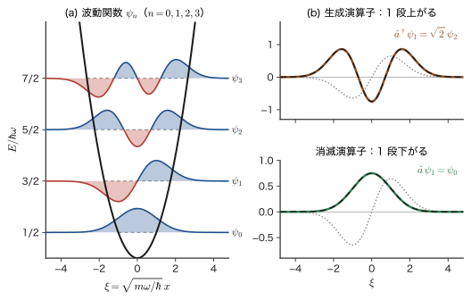
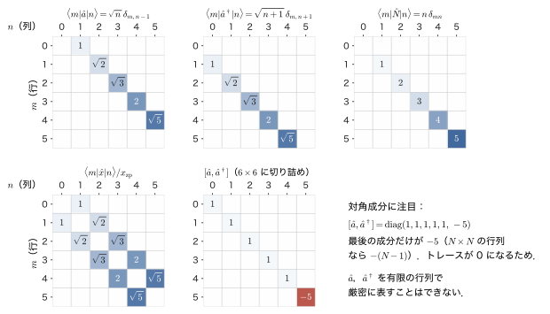
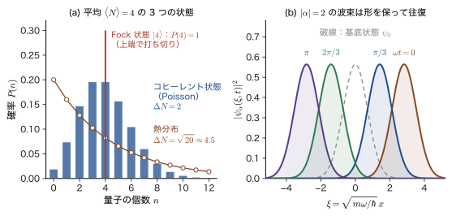
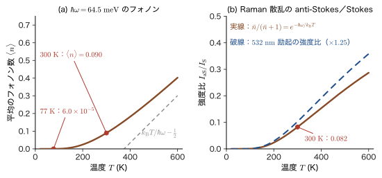

第56章生成・消滅演算子 — 調和振動子を代数で解く
太陽電池に光が当たると電流が流れる．光を粒子（光子）の流れと考えると，吸収の一回一回は「光子が 1 個なくなり，電子が 1 個，価電子帯から伝導帯へ移る」という出来事である．逆に LED では，電子と正孔が再結合して「光子が 1 個生まれる」．結晶が熱をもつというのは，格子振動の量子（フォノン）が結晶の中にたくさん「いる」ということで，電子が結晶の中を流れるとき，フォノンは 1 個ずつ生まれたり消えたりする．材料の性質の多くは，このように粒子の数が変わる過程で決まっている．ところが，前の部までに使ってきた Schrödinger（シュレーディンガー）方程式の波動関数は，粒子の数が決まった系（電子 1 個，あるいは $N$ 個）の運動を調べる道具だった．粒子の数が変わる現象を書き表すには，もう一つの言葉が要る．それが，第X部で学ぶ第二量子化（second quantization）である．
この章は，その入口として，調和振動子というもっともやさしい例を使う．第13章では，Schrödinger 方程式を微分方程式として解き，べき級数と Hermite（エルミート）多項式を使って $E_n=(n+\tfrac12)\hbar\omega$ を求めた．この章では，同じ問題を，微分方程式を一度も解かずに，演算子の代数だけで解く．鍵は，ハミルトニアンを $\hat{a}$ と $\hat{a}^\dagger$ という 2 つの演算子で因数分解することである．すると $\hat{a}^\dagger$ は「エネルギーの量子を 1 個つくる」演算子，$\hat{a}$ は「1 個消す」演算子と読め，調和振動子の量子数 $n$ は「量子の個数」という意味をもつ．$\psi_n$ を「エネルギー準位 $n$ の状態」とだけ見ていた読者は，ここで「$n$ 個の量子が入っている状態」という新しい目をもつことになる．この見方が，光子・フォノンの記述と，多粒子系の第二量子化の出発点である．
古典物理（AD 03 第7章 7.1）とのつながりも確かめておこう．古典力学の調和振動子には，位置と運動量から作る複素数の振幅 $\alpha$ があり，量子力学ではこれが演算子 $\hat{a}$ に置き換わる．古典力学では $\alpha^*\alpha$ と $\alpha\alpha^*$ は同じ数だが，演算子では積の順序を入れ替えると 1 だけずれる．このずれが零点エネルギー $\tfrac12\hbar\omega$ の正体である（56.2.5 節，56.3 節）．
第X部の見取り図．第IX部（第49〜55章）では，時間とともに状態が変わる系を調べたが，粒子の数は最初から最後まで一定だった．第52章で光の吸収・放出を扱ったときも，光は古典的な電磁波として扱い，「光子が増える・減る」という言い方は使わなかった．第X部では，粒子の数そのものを変数として扱う．
- 第56章（本章）：1 個の調和振動子を $\hat{a}$，$\hat{a}^\dagger$ で解く．量子の個数，行列表示，コヒーレント状態．
- 第57章 同種粒子と占有数表示：振動子 1 個を「軌道 1 個」と読み替えて多数の軌道へ広げる．Bose 粒子は $\comm{\hat{a}_i}{\hat{a}_j^\dagger}=\delta_{ij}$，Fermi 粒子は反交換関係 $\acomm{\hat{c}_i}{\hat{c}_j^\dagger}=\delta_{ij}$ に従い，Pauli の排他原理は $(\hat{c}_i^\dagger)^2=0$ の一行になる．
- 第58章 1 体・2 体演算子と場の演算子：運動エネルギーや電子間の Coulomb 相互作用を $\hat{c}^\dagger\hat{c}$ や $\hat{c}^\dagger\hat{c}^\dagger\hat{c}\hat{c}$ で書く．
- 第59章 電子ガスと Hubbard 模型：Fermi 海，電子・正孔対，強い電子相関．
- 第60章 光子とフォノン：電磁場と格子振動を量子化し，自然放出・誘導放出・Raman 散乱を「量子が増える・減る」過程として導く．
第X部は，線形応答理論（AD 08）や固体物理学（AD 06），密度汎関数理論（AD 07）を読むための言葉を用意する部でもある．本章の 56.1 節では，まず粒子数が変わる現象を並べて示し，第二量子化がどのような場面で役に立つのかを先に見てもらう．
- 光の吸収・発光・フォノンの放出のような「粒子の数が変わる過程」が，「消す」と「作る」の 2 つの操作で書けることを説明し，$N$ が変わると $\Psi(x_1,\dots,x_N)$ の定義域が変わってしまう理由を述べられること
- 調和振動子のハミルトニアンを $\hat{a}=\sqrt{m\omega/2\hbar}\,(\hat{x}+i\hat{p}/m\omega)$ と $\hat{a}^\dagger$ で因数分解し，$\hbar\omega\,\hat{a}\hat{a}^\dagger=\hat{H}+\tfrac12\hbar\omega$ の「余り」が零点エネルギーであることを，任意の関数に作用させて確かめられること
- $\comm{\hat{x}}{\hat{p}}=i\hbar$ から $\comm{\hat{a}}{\hat{a}^\dagger}=1$ を導き，$\hat{H}=\hbar\omega(\hat{N}+\tfrac12)$，$\hat{N}=\hat{a}^\dagger\hat{a}$ を示せること．$\hat{a}\hat{a}^\dagger=\hat{N}+1$ で $\hat{N}$ にならない理由も述べられること
- $\hat{a}^\dagger\psi_n=\sqrt{n+1}\,\psi_{n+1}$，$\hat{a}\psi_n=\sqrt{n}\,\psi_{n-1}$ を，$n=1$ の具体的な計算と，$\comm{\hat{N}}{\hat{a}^\dagger}=\hat{a}^\dagger$ とノルムを使った一般的な証明の 2 通りで示せること
- $\hat{a}\psi_0=0$ という 1 階の微分方程式から $\psi_0$ を求め，$\psi_n=(\hat{a}^\dagger)^n\psi_0/\sqrt{n!}$ から Hermite 多項式を作れること
- $\expval{x^2}$，$\expval{x^4}=(\hbar/2m\omega)^2(6n^2+6n+3)$，$\Delta x\,\Delta p=(n+\tfrac12)\hbar$ を，積分を一度もせずに代数で求められること
- $\hat{a}$，$\hat{a}^\dagger$，$\hat{N}$，$\hat{x}$ を行列で書き，選択則 $\Delta n=\pm1$ と，CO 分子の赤外吸収（$4.67\ \mathrm{\mu m}$）を結びつけられること．有限次元の行列では $\comm{\hat{a}}{\hat{a}^\dagger}=1$ が成り立たない理由を説明できること
- コヒーレント状態 $\ket{\alpha}=e^{-\abs{\alpha}^2/2}\sum_n\alpha^n/\sqrt{n!}\,\ket{n}$ の量子の個数の分布（Poisson（ポアソン）分布）と，形を変えずに古典的に振動する波束であることを説明できること
- $n$ を「フォノン・光子の個数」と読み，熱平衡の平均個数 $\bar{n}=1/(e^{\hbar\omega/k_{\mathrm{B}}T}-1)$ と，Si の光学フォノンの Raman 散乱の Stokes／anti-Stokes 強度比を計算できること．ただし $\psi_n(x)$ は「$n$ 個の粒子の波動関数」ではない，と正しく述べられること
前提（必要に応じて）：Heisenberg 表示（第50章 50.3 節），電気双極子遷移と選択則（第52章 52.4 節），角運動量の昇降演算子との類似（第24章 24.1 節）．数学は，調和振動子のポテンシャルと無次元化（大学数学 第46章 46.1），べき級数解法と Hermite 多項式（46.2），固有値と固有ベクトル（大学数学 第12章 12.1），表現行列（大学数学 第11章 11.4）．物理は，単振動（大学基礎物理学 第7章 7.1），調和振動子の分配関数と Einstein 模型（第51章 51.2），光子とフォノン（第53章 53.10）．姉妹編の大学数学 第46章でもこの問題を数学の側面から扱った．本章は，物理として最初から丁寧に解き直す．
もとにしたノート：望月泰英『物理学ノート 量子力学3』 pp. 61–64．
56.1 粒子の数が変わる世界 — なぜ第二量子化なのか
56.1.1 波動関数を毎度出さなくても — 粒子の数で状態を言い表す
これまでの章では，粒子の状態を波動関数で表してきた．粒子が 1 個なら $\psi(x)$，電子が 2 個なら $\Psi(\bm{r}_1,\bm{r}_2)$，$N$ 個なら $\Psi(\bm{x}_1,\dots,\bm{x}_N)$ である（第33章）．多粒子の状態をこのように波動関数で扱うと，粒子が増えるにつれて式はたちまち扱いにくくなる．しかも同種の粒子は互いに区別できないので，「何番目の粒子がどこにいるか」という情報の大半は，もともと不要なものである．本当に必要なのは，「どの状態（軌道）に，粒子が何個いるか」だけのはずである．
多粒子の状態を扱うとき，波動関数を毎回書き出さなくても，「粒子の数と，その変化」を記述することで扱いがずっと便利になることが多い．そのために使われるのが，粒子の生成演算子と消滅演算子である．次の 3 つの場面を考えてみよう．
- Fermi 粒子（電子など）を扱うときは，粒子の数そのものが変わることは少ない．けれども，電子の励起状態を考えるときには，電子の消滅と正孔の生成を考えなければならない．たとえば，軌道 $i$ にいた電子が，空いている軌道 $a$ に移る励起は，「軌道 $i$ の電子を 1 個消し，軌道 $a$ の電子を 1 個作る」と言い換えられる．軌道 $i$ に残った「穴」が正孔（hole）である．
- Bose 粒子（光子やフォノンなど）では，粒子の数の変化が常に起こる．熱い物体は光子を出し続け，冷たい物体は光子を吸う．結晶の温度が上がることは，フォノンの数が増えることである．そのため，生成・消滅演算子がその記述で重要な役割を果たす．
- この道具の威力は，この部の後半に進むほど実感できるだろう．Hartree–Fock 近似で苦労した 2 電子間の Coulomb 相互作用が 1 行で書けること，Fermi 海に電子・正孔対をつくる励起，自然放出の導出などである．
イメージ：多体量子論へのイントロダクション
「多体問題」とは，互いに力を及ぼし合う多数の粒子の量子力学のことである．原子の中の電子でさえ，He のように電子が 2 個あるだけで，Schrödinger 方程式は厳密には解けなかった．摂動論（第29章）や変分法（第31章），Hartree–Fock 近似（第VII部）で近似を重ねて答えに近づいたのである．固体では，$1\ \mathrm{cm^3}$ の中に $10^{22}$ 個以上の電子と原子核がある．このような系を扱うには，$10^{22}$ 個の座標の関数を書くのではなく，「どの軌道に電子が入っているか」という占有の様子を指定し，その占有をほんの少しずつ変える演算子の列として理論を組み立てるのが現実的である．
材料科学に出てくる理論の多くは，このやり方で書かれている．半導体の光吸収と発光，磁性（電子のスピンの相互作用），超伝導（電子対，Cooper 対のシミュレーター），格子振動と電子の相互作用（電気抵抗の温度変化），光学応答（姉妹編「線形応答理論（AD 08）」）．この部は，その共通の言葉を身につけるための部である．
56.1.2 粒子の数が変わると，波動関数の定義域が変わってしまう
波動関数には，粒子の数が変わる現象をそのままでは書けない理由がある．$N$ 個の粒子の波動関数 $\Psi(\bm{x}_1,\dots,\bm{x}_N)$ は，$N$ 個の座標の関数である．$N=1$ なら 1 つの座標（3 次元空間の点）の関数，$N=2$ なら 2 つの座標（6 次元の点）の関数，…と，$N$ が変わるたびに関数の入力になる空間，すなわち定義域が変わる．$N=1$ の波動関数と $N=2$ の波動関数は，同じ関数の空間にはいない．
そのため，光が吸収されて粒子の数が $N$ 個から $N-1$ 個に変わる過程を，1 つのハミルトニアンのもとでの，1 つの関数空間の中の時間変化として書くことができない．必要になるのは，$N=0,1,2,\dots$ のすべての場合の状態を 1 つにまとめた空間（Fock 空間．第57章）と，その空間の中で粒子を 1 個増やしたり減らしたりする演算子である．後者が，生成演算子と消滅演算子である．
状態の書き方も変わる．軌道 1，2，3 があるとして，「軌道 1 に粒子が 2 個，軌道 2 に 0 個，軌道 3 に 1 個」という状態を，占有数の並びで $\ket{2,0,1}$ と書くことにする．粒子の総数は $2+0+1=3$ である．粒子を 1 個消せば $\ket{2,0,0}$ や $\ket{1,0,1}$ になり，1 個作れば $\ket{2,1,1}$ などになる．どの場合も，状態は「整数の並び」で書かれたままで，変数の数も関数の空間も変わらない．これが，第二量子化の言葉（占有数表示）の基本的な発想である．
56.1.3 粒子の数が変わる現象 — 「消す」と「作る」で書く
材料の性質を決めている，粒子の数が変わる現象をいくつか見よう（図56.1）．
- (a) 半導体による光の吸収：バンドギャップより大きなエネルギー $\hbar\omega$ をもつ光子が 1 個吸収されると，価電子帯の電子が 1 個，伝導帯に移る．光子が 1 個消え，価電子帯の電子が 1 個消え（価電子帯に正孔が 1 個できる），伝導帯に電子が 1 個作られる．光子の消滅演算子を $\hat{a}$，電子の生成・消滅演算子を $\hat{c}^\dagger$，$\hat{c}$ と書くと，この過程は $\hat{a}\,\hat{c}_{\mathrm{c}}^{\dagger}\,\hat{c}_{\mathrm{v}}$ という積で表される（添字 c は伝導帯，v は価電子帯．積は右の演算子から順に作用する）．
- (b) 半導体の発光（LED）：伝導帯の電子と価電子帯の正孔が再結合して，光子が 1 個作られる．伝導帯の電子が消え，価電子帯に電子が作られて正孔が埋まる．演算子では $\hat{a}^\dagger\,\hat{c}_{\mathrm{v}}^{\dagger}\,\hat{c}_{\mathrm{c}}$ である．(a) と (b) は，互いにエルミート共役（消す↔作る）の関係にある．
- (c) フォノンの放出：結晶の中を運動する電子が，状態 $k$ から状態 $k'$ に移りながら，格子振動の量子（フォノン）を 1 個放出する．電子の消滅と生成，フォノンの生成が同時に起こる．演算子では，フォノンの生成演算子を $\hat{b}^\dagger$ として $\hat{b}^\dagger\,\hat{c}_{k'}^{\dagger}\,\hat{c}_{k}$ である．電気抵抗の温度変化も，Raman 散乱（散乱光のエネルギーが変わる現象．56.7.3 節）も，超伝導の引力も，この形の過程から出てくる．
- (d) 電子・陽電子の対生成（第XI部）：エネルギーが $2m_{\mathrm{e}}c^2\approx1.02\ \mathrm{MeV}$ 以上の光子（$\gamma$ 線）が原子核の近くを通ると，光子が 1 個消え，電子と陽電子が 1 個ずつ生まれる．この場合は電子の数さえも変わる．
演算子の記号は先取りで，意味は今はわからなくてよい．要点は，どの現象も「消す」「作る」の 2 つの操作の組み合わせで書けることである．波動関数を使うと，$N$ が変わるたびに別の関数を考えなければならなかったが，この言葉を使うと，上の (a)〜(c) の現象（図56.1）は同じ形の式で並べて書ける．(d) も，電子と陽電子の生成演算子と光子の消滅演算子の積で書けるが，第XI部で扱う．この章では，その 2 つの操作（$\hat{a}$ と $\hat{a}^\dagger$）を，もっとも簡単な系である調和振動子で手に入れる．
注意：記号の約束（第X部）
本書の第X部では，Bose 粒子（光子・1 個の調和振動子の量子）の演算子を $\hat{a}$，$\hat{a}^\dagger$，Fermi 粒子（電子）の演算子を $\hat{c}$，$\hat{c}^\dagger$，フォノンの演算子を $\hat{b}$，$\hat{b}^\dagger$ と書く．演算子には必ず「帽子」（ハット）をつけ，固有値や行列要素のような普通の数（c 数）にはつけない．エルミート共役は $\dagger$（ダガー）である．真空の状態（粒子が 1 個もいない状態）は $\ket{0}$ と書く．1 個の調和振動子では，$n=0$ の基底状態がこの真空にあたる．相互作用のある多体系の基底状態は $\ket{\Psi_0}$ などと書き，$\ket{0}$ とは書かない．正孔の演算子 $\hat{h}$ は，Planck 定数 $h$ とは無関係である（第59章）．
56.1.4 「第二量子化」という名前と歴史
「第二量子化」という名前は難しそうに聞こえるが，この章の中身は，調和振動子を微分方程式なしで解く代数の方法と，「何個入っているか」を数える言葉のふたつである．名前の由来を整理しておこう．
イメージ：第一量子化と第二量子化
第一量子化は，古典力学の位置 $x$ と運動量 $p$ を演算子 $\hat{x}$，$\hat{p}$ に置き換え，交換関係 $\comm{\hat{x}}{\hat{p}}=i\hbar$ を課すことである．これまでの 55 章で学んだ量子力学は，すべてこの第一量子化の上に立っている．この手続きで得られる波動関数 $\psi(\bm{r})$ は，粒子が空間のどこにいるかの確率の振幅を与える，いわば 1 粒子の「場」である．
第二量子化は，その波動関数 $\psi(\bm{r})$ 自体を「古典的な場」とみなして，もう一度，演算子 $\hat{\psi}(\bm{r})$ に置き換える手続きである（第58章で導入する場の演算子）．名前は歴史的なもので，量子化を 2 回行うという意味ではない．実質的には，状態を「粒子の占有数」で指定する占有数表示（occupation number representation）である．
この章の 1 個の調和振動子は，その最初の例になる．振動子の状態 $\psi_n$ の量子数 $n$ を「量子が $n$ 個」と読み替えると，$n$ を増やす・減らす演算子 $\hat{a}^\dagger$，$\hat{a}$ が現れる．同じことを，異なる多数の軌道に対して行うのが，第57章以降の第二量子化である．
歴史を簡単に振り返っておく．生成・消滅演算子を使う方法は，Dirac（ディラック）が 1927 年に，電磁場を調和振動子の集まりとして量子化し，光子の放出・吸収を書き表したのが最初である．Dirac はこの方法で，Einstein の自然放出の係数 $A$ を導いた（第60章）．その後，Jordan（ヨルダン）と Wigner（ウィグナー）が 1928 年に，Fermi 粒子に対して反交換関係に従う演算子を導入した．Pauli の排他原理が，演算子の代数の性質として自然に出てくる．さらに Fock（フォック）が 1932 年に，粒子数の異なる状態をまとめて扱う空間（Fock 空間）を定式化した．これらの成果が，現在の多体量子論の標準の言語となっている．
例題56.1 状態の記述量 — Slater 行列式と占有数
10 個の電子を，20 個の（スピンを含めた）軌道に入れる．(1) 電子の入れ方，すなわち占有数で区別される状態は何個あるか．(2) 1 つの Slater 行列式を，波動関数として展開すると，何個の項の和になるか．
解答 (1) 20 個の軌道のうち，電子が入る 10 個を選ぶ選び方の数であり，Pauli の排他原理のため，1 つの軌道には電子は高々 1 個しか入れない．よって $\displaystyle\binom{20}{10}=\frac{20!}{10!\,10!}=184\,756$ 個である．各状態は，たとえば $1111100000\,1111100000$ のように，20 個の数字 0 か 1 の並び（0 は空，1 は占有）で指定され，粒子の数は並びの中の 1 の個数に等しい．
(2) 10 個の軌道を指定した Slater 行列式は，$10\times10$ の行列式であり，展開すると $10!=3\,628\,800$ 個の項の和になる．各項は 10 個の 1 電子軌道の積である．
占有数表示では，同じ状態が 20 個の 0/1 の並びで書け，電子の数が 10 個から 9 個に変わる過程も「1 が 1 個減る」という並び方の変化として書き続けられる．一方，波動関数では，$N$ が変わると座標の数が変わり，別の関数を用意しなければならない．なお，$184\,756$ 個の状態は，$\hat{c}_i^\dagger$ を 10 個かけた演算子の積（第57章）で一つずつ作れる．
例題56.2 光子の数の勘定 — He–Ne レーザー
出力 $1\ \mathrm{mW}$，波長 $632.8\ \mathrm{nm}$ の He–Ne レーザー光を，すべて吸収する黒い板に当てる．(1) 光子 1 個のエネルギーを eV と J で求めよ．(2) 板に毎秒吸収される光子の数を求めよ．(3) 光子 1 個が電子 1 個を励起するとして（量子効率 $100\ \%$），流れる光電流を求めよ．
解答 (1) $hc=1239.84\ \mathrm{eV\,nm}$ より，$E=\dfrac{hc}{\lambda}=\dfrac{1239.84\ \mathrm{eV\,nm}}{632.8\ \mathrm{nm}}=1.959\ \mathrm{eV}$．$1\ \mathrm{eV}=1.602\,177\times10^{-19}\ \mathrm{J}$ なので，$E=1.959\times1.602\,177\times10^{-19}\ \mathrm{J}=3.139\times10^{-19}\ \mathrm{J}$．
(2) $1\ \mathrm{mW}=10^{-3}\ \mathrm{J/s}$ なので，毎秒の光子数は $\dfrac{10^{-3}\ \mathrm{J/s}}{3.139\times10^{-19}\ \mathrm{J}}=3.19\times10^{15}\ \mathrm{s^{-1}}$．板が光を吸収するたびに，光子が 1 個ずつ消滅しているので，毎秒およそ $3.2\times10^{15}$ 個の光子が「消える」．
(3) 電荷は $e_0=1.602\,177\times10^{-19}\ \mathrm{C}$（本書では電気素量を $e_0$ と書く．AD 03 で $e$ と書いたものと同じ量である）．電流は $I=e_0\times3.19\times10^{15}\ \mathrm{s^{-1}}=5.10\times10^{-4}\ \mathrm{A}=0.51\ \mathrm{mA}$ である．これは $1\ \mathrm{mW}/1.959\ \mathrm{V}=0.51\ \mathrm{mA}$ とも一致する．光子が 1 個消えるごとに，電子が 1 個生まれる（励起される）という，粒子の数の対応を反映している．
56.2 調和振動子のハミルトニアンを因数分解する
56.2.1 もう一度，Schrödinger 方程式から — 位置と運動量の 2 乗の和
質量 $m$，角振動数 $\omega$ の 1 次元調和振動子の時間を含まない Schrödinger 方程式は，第13章で見たとおり
\begin{equation} -\frac{\hbar^2}{2m}\frac{\dd^2\psi}{\dd x^2}+\frac12m\omega^2x^2\,\psi=E\,\psi \label{eq:56-tise} \end{equation}である．エネルギー固有値を $E_n$，固有関数を $\psi_n$ と書くときは，この章でも調和振動子の約束どおり $n=0,1,2,\dots$（基底状態が $n=0$）とする．運動量演算子は，位置表示で $\hat{p}=\dfrac{\hbar}{i}\dfrac{\dd}{\dd x}=-i\hbar\dfrac{\dd}{\dd x}$ である．これを 2 回作用させると $\hat{p}^2=\left(\dfrac{\hbar}{i}\dfrac{\dd}{\dd x}\right)^2=-\hbar^2\dfrac{\dd^2}{\dd x^2}$ なので，式 \eqref{eq:56-tise} の運動エネルギーの項は $-\dfrac{\hbar^2}{2m}\dfrac{\dd^2}{\dd x^2}=\dfrac{1}{2m}\left(\dfrac{\hbar}{i}\dfrac{\dd}{\dd x}\right)^2$ と書き換えられる．すなわち
\begin{equation} \left[\frac{1}{2m}\left(\frac{\hbar}{i}\frac{\dd}{\dd x}\right)^2+\frac12m\omega^2x^2\right]\psi=E\,\psi \label{eq:56-tise-p} \end{equation}である．左辺の括弧の中はハミルトニアン $\hat{H}$ であり，「運動量の 2 乗」と「位置の 2 乗」の和の形をしている．この形に，次のアイデアを使う．
イメージ：2 乗の和は因数分解できる
実数 $a$，$b$ に対して $a^2+b^2=(a+ib)(a-ib)$ が成り立つ（右辺を展開すると $a^2-iab+iba+b^2=a^2+b^2$ で，$ab=ba$ を使った）．調和振動子のエネルギーは，古典力学では $E=\dfrac{p^2}{2m}+\dfrac12m\omega^2x^2=\dfrac12m\omega^2\left[x^2+\left(\dfrac{p}{m\omega}\right)^2\right]$ であり，2 乗の和である．そこで $a=x$，$b=p/m\omega$ として，$\left(x+\dfrac{ip}{m\omega}\right)\left(x-\dfrac{ip}{m\omega}\right)$ という積にしてみよう．古典力学では $x$ も $p$ も数なので，積の順序は気にしなくてよい．しかし量子力学では，$\hat{x}$ と $\hat{p}$ は交換しない（$\comm{\hat{x}}{\hat{p}}=i\hbar$）．$ab=ba$ を使えない分だけ，「余り」が出るはずである．その余りを正確に計算するのが，次の小節である．
56.2.2 因数分解 — 行を飛ばさずに
位置表示で計算する．記号を短くするために，演算子
$$ \hat{A}\equiv\frac{1}{m\omega}\cdot\frac{\hbar}{i}\frac{\dd}{\dd x} $$を導入する（$\hat{A}$ は $x$ と同じ長さの次元をもつ演算子である．$\hat{A}=\hat{p}/m\omega$ にほかならない）．このとき $\hat{A}^2=\dfrac{1}{m^2\omega^2}\left(\dfrac{\hbar}{i}\dfrac{\dd}{\dd x}\right)^2$ である．まずハミルトニアンを，$\dfrac12m\omega^2$ をくくり出して書き直す．
\begin{align} \hat{H}&=\frac{1}{2m}\left(\frac{\hbar}{i}\frac{\dd}{\dd x}\right)^2+\frac12m\omega^2x^2 \notag\\ &=\frac12m\omega^2\left[x^2+\frac{1}{m^2\omega^2}\left(\frac{\hbar}{i}\frac{\dd}{\dd x}\right)^2\right]=\frac12m\omega^2\left[x^2+\hat{A}^2\right] \label{eq:56-fact1} \end{align}（1 行目から 2 行目への変形では，$\dfrac{1}{2m}=\dfrac12m\omega^2\cdot\dfrac{1}{m^2\omega^2}$ を使った．）次に，$(x+i\hat{A})(x-i\hat{A})$ を，演算子の積の順序を保ったまま展開する．
$$ (x+i\hat{A})(x-i\hat{A})=x\cdot x-i\,x\hat{A}+i\,\hat{A}x+(i\hat{A})(-i\hat{A})=x^2+\hat{A}^2+i\left(\hat{A}x-x\hat{A}\right)=x^2+\hat{A}^2+i\comm{\hat{A}}{x} $$ここで $(i\hat{A})(-i\hat{A})=-i^2\hat{A}^2=\hat{A}^2$ を使った．交換子 $\comm{\hat{A}}{x}$ は，任意の関数 $f(x)$ に作用させて計算する．積の微分法則 $\dfrac{\dd}{\dd x}(xf)=f+x\dfrac{\dd f}{\dd x}$ より，
$$ \comm{\hat{A}}{x}f=\hat{A}(xf)-x(\hat{A}f)=\frac{1}{m\omega}\frac{\hbar}{i}\left[\frac{\dd}{\dd x}(xf)-x\frac{\dd f}{\dd x}\right]=\frac{1}{m\omega}\frac{\hbar}{i}\,f \qquad\therefore\quad \comm{\hat{A}}{x}=\frac{\hbar}{i\,m\omega} $$となる．よって $i\comm{\hat{A}}{x}=\dfrac{\hbar}{m\omega}$ であり，
\begin{equation} (x+i\hat{A})(x-i\hat{A})=x^2+\hat{A}^2+\frac{\hbar}{m\omega} \qquad\text{すなわち}\qquad x^2+\hat{A}^2=(x+i\hat{A})(x-i\hat{A})-\frac{\hbar}{m\omega} \label{eq:56-fact2} \end{equation}が得られる．数のときの $a^2+b^2=(a+ib)(a-ib)$ に，定数 $-\hbar/m\omega$ の余りがついた形である．これを式 \eqref{eq:56-fact1} に代入して，$\dfrac12m\omega^2\cdot\dfrac{\hbar}{m\omega}=\dfrac{\hbar\omega}{2}$ に注意すると，
\begin{equation} \hat{H}=\frac12m\omega^2\,(x+i\hat{A})(x-i\hat{A})-\frac{\hbar\omega}{2} \label{eq:56-fact3} \end{equation}となる．続いて，$i\hat{A}=i\cdot\dfrac{1}{m\omega}\cdot\dfrac{\hbar}{i}\dfrac{\dd}{\dd x}=\dfrac{\hbar}{m\omega}\dfrac{\dd}{\dd x}$（$i$ が約分される）を使って $x\pm i\hat{A}$ を微分の形に直し，さらに $\dfrac12m\omega^2=\hbar\omega\cdot\dfrac12\cdot\dfrac{m\omega}{\hbar}=\hbar\omega\cdot\sqrt{\dfrac{m\omega}{2\hbar}}\cdot\sqrt{\dfrac{m\omega}{2\hbar}}$ と分けて，2 つの因子に 1 つずつ配る．
\begin{align} \hat{H}&=\frac12m\omega^2\left(x+\frac{\hbar}{m\omega}\frac{\dd}{\dd x}\right)\left(x-\frac{\hbar}{m\omega}\frac{\dd}{\dd x}\right)-\frac{\hbar\omega}{2} \notag\\ &=\hbar\omega\cdot\frac12\cdot\frac{m\omega}{\hbar}\left(x+\frac{\hbar}{m\omega}\frac{\dd}{\dd x}\right)\left(x-\frac{\hbar}{m\omega}\frac{\dd}{\dd x}\right)-\frac{\hbar\omega}{2} \notag\\ &=\hbar\omega\cdot\underbrace{\sqrt{\frac{m\omega}{2\hbar}}\left(x+\frac{\hbar}{m\omega}\frac{\dd}{\dd x}\right)}_{\text{消滅演算子 }\hat{a}}\cdot\underbrace{\sqrt{\frac{m\omega}{2\hbar}}\left(x-\frac{\hbar}{m\omega}\frac{\dd}{\dd x}\right)}_{\text{生成演算子 }\hat{a}^\dagger}-\frac{\hbar\omega}{2} \label{eq:56-fact4} \end{align}最後の行の 2 つの因子に名前をつけたのが，次の定義の $\hat{a}$ と $\hat{a}^\dagger$ である．
注意：$\hat{H}=\hbar\omega\,\hat{a}\hat{a}^\dagger$ ではない
式 \eqref{eq:56-fact4} の最後の「$-\hbar\omega/2$」を落として，$\hat{H}=\hbar\omega\,\hat{a}\hat{a}^\dagger$ と書いてはいけない．正しくは
$$ \hbar\omega\,\hat{a}\hat{a}^\dagger=\hat{H}+\frac{\hbar\omega}{2}\qquad\text{すなわち}\qquad \hat{H}=\hbar\omega\left(\hat{a}\hat{a}^\dagger-\frac12\right) $$である．この「$\dfrac{\hbar\omega}{2}$」のずれは，$\hat{x}$ と $\hat{p}$ が交換しない（$\comm{\hat{x}}{\hat{p}}=i\hbar\ne0$）ことの直接の帰結であり，次節で見るように，零点エネルギーそのものになる．積の順序を入れ替えた $\hat{a}^\dagger\hat{a}$ の方は $\hbar\omega\,\hat{a}^\dagger\hat{a}=\hat{H}-\hbar\omega/2$ で，$\hat{a}\hat{a}^\dagger$ との差が $\hbar\omega$，つまり $\comm{\hat{a}}{\hat{a}^\dagger}=1$ である（56.3 節）．
例題56.3 因数分解の「余り」を任意の関数で確かめる
$l\equiv\hbar/(m\omega)$ とおく．任意の（2 回微分できる）関数 $f(x)$ に対して，$\left(x+l\dfrac{\dd}{\dd x}\right)\left(x-l\dfrac{\dd}{\dd x}\right)f$ を計算し，$\hbar\omega\,\hat{a}\hat{a}^\dagger f=\hat{H}f+\dfrac{\hbar\omega}{2}f$ を示せ．
解答 まず内側の因子を作用させる：$\left(x-l\dfrac{\dd}{\dd x}\right)f=xf-lf'$．次に外側の因子を作用させる：
$$ \left(x+l\frac{\dd}{\dd x}\right)(xf-lf')=x(xf-lf')+l\frac{\dd}{\dd x}(xf-lf')=x^2f-lxf'+l\left(f+xf'-lf''\right)=x^2f-l^2f''+lf $$（$-lxf'$ と $+lxf'$ が打ち消し合い，積の微分で出た $+lf$ が残った．）ここで $\hat{a}\hat{a}^\dagger=\dfrac{m\omega}{2\hbar}\left(x+l\dfrac{\dd}{\dd x}\right)\left(x-l\dfrac{\dd}{\dd x}\right)$ なので，$\hbar\omega\,\hat{a}\hat{a}^\dagger=\dfrac{m\omega^2}{2}(\cdots)$ となり，
$$ \hbar\omega\,\hat{a}\hat{a}^\dagger f=\frac{m\omega^2}{2}\left[x^2f-l^2f''+lf\right] =\frac12m\omega^2x^2f-\frac{m\omega^2}{2}\cdot\frac{\hbar^2}{m^2\omega^2}f''+\frac{m\omega^2}{2}\cdot\frac{\hbar}{m\omega}f =\underbrace{\left[-\frac{\hbar^2}{2m}f''+\frac12m\omega^2x^2f\right]}_{\hat{H}f}+\frac{\hbar\omega}{2}f $$である．よって $\hbar\omega\,\hat{a}\hat{a}^\dagger f=\hat{H}f+\dfrac{\hbar\omega}{2}f$ が示された．余りの $\dfrac{\hbar\omega}{2}f$ は，$f$ の微分を含まない，$f$ そのものの定数倍である．積の微分で出る $lf$ という項が，その正体である．
56.2.3 消滅演算子と生成演算子の定義
式 \eqref{eq:56-fact4} の 2 つの因子に名前をつけよう．$\hat{A}=\dfrac{\hat{p}}{m\omega}$（$\hat{p}=\dfrac{\hbar}{i}\dfrac{\dd}{\dd x}$ だから）なので，$x\pm i\hat{A}=\hat{x}\pm\dfrac{i\hat{p}}{m\omega}$ と書ける．位置演算子 $\hat{x}$ と運動量演算子 $\hat{p}$ を使って，次のように定義する．
定義56.1 消滅演算子・生成演算子
質量 $m$，角振動数 $\omega$ の 1 次元調和振動子に対して，
\begin{equation} \hat{a}\equiv\sqrt{\frac{m\omega}{2\hbar}}\left(\hat{x}+\frac{i\hat{p}}{m\omega}\right),\qquad \hat{a}^\dagger\equiv\sqrt{\frac{m\omega}{2\hbar}}\left(\hat{x}-\frac{i\hat{p}}{m\omega}\right) \label{eq:56-adef} \end{equation}で定義される $\hat{a}$ を消滅演算子（annihilation operator），$\hat{a}^\dagger$ を生成演算子（creation operator）という．位置表示（$\hat{x}\to x$，$\hat{p}\to\frac{\hbar}{i}\frac{\dd}{\dd x}$）では，
\begin{equation} \hat{a}=\sqrt{\frac{m\omega}{2\hbar}}\left(x+\frac{\hbar}{m\omega}\frac{\dd}{\dd x}\right),\qquad \hat{a}^\dagger=\sqrt{\frac{m\omega}{2\hbar}}\left(x-\frac{\hbar}{m\omega}\frac{\dd}{\dd x}\right) \label{eq:56-adef-x} \end{equation}である．合わせてはしご演算子（ladder operators）ともいう．
$\hat{a}$ は「エー・ハット」，$\hat{a}^\dagger$ は「エー・ダガー」と読む．「消滅」「生成」の名前の意味は，56.3 節と 56.4 節で，$\hat{a}$ が量子を 1 個消し，$\hat{a}^\dagger$ が 1 個作ることを確かめたときに明らかになる．次元を確かめておこう．$\sqrt{m\omega/\hbar}$ は $1/(\text{長さ})$ の次元（第13章の $1/x_0$），$\hat{x}$ は長さの次元をもつので，$\hat{a}$ と $\hat{a}^\dagger$ は無次元である．
導出：$\hat{a}^\dagger$ は $\hat{a}$ のエルミート共役である
記号 $\dagger$（ダガー）の意味を確かめよう．演算子 $\hat{A}$ のエルミート共役 $\hat{A}^\dagger$ とは，任意の 2 つの関数 $f$，$g$ に対して $\displaystyle\int f^*\,(\hat{A}g)\,\dd x=\int(\hat{A}^\dagger f)^*\,g\,\dd x$ を満たす演算子である（第9章）．$\hat{x}$ と $\hat{p}$ はエルミート演算子なので，$\hat{x}^\dagger=\hat{x}$，$\hat{p}^\dagger=\hat{p}$ である（$\hat{p}$ がエルミートであることは，$f$，$g$ が遠方で $0$ に近づくとき，部分積分 $\int f^*(-i\hbar g')\,\dd x=\int(-i\hbar f')^*g\,\dd x$ で確かめられる．$-i\hbar$ の共役で符号が 1 回，部分積分で符号が 1 回反転して，もとに戻る）．一方，$i$ の共役は $-i$ なので $(i\hat{p})^\dagger=-i\hat{p}$ となる．したがって
$$ (\hat{a})^\dagger=\sqrt{\frac{m\omega}{2\hbar}}\left(\hat{x}^\dagger+\frac{(i\hat{p})^\dagger}{m\omega}\right)=\sqrt{\frac{m\omega}{2\hbar}}\left(\hat{x}-\frac{i\hat{p}}{m\omega}\right)=\hat{a}^\dagger $$となり，$\hat{a}^\dagger$ は $\hat{a}$ のエルミート共役である．位置表示で部分積分により直接確かめることもできる．$f$，$g$ が $x\to\pm\infty$ で $0$ に近づくとすると，$l=\hbar/m\omega$ として，
$$ \int(\hat{a}^\dagger f)^*\,g\,\dd x=\sqrt{\frac{m\omega}{2\hbar}}\int\left(xf^*-lf'^*\right)g\,\dd x =\sqrt{\frac{m\omega}{2\hbar}}\left[\int xf^*g\,\dd x-l\Bigl[f^*g\Bigr]_{-\infty}^{\infty}+l\int f^*g'\,\dd x\right]=\int f^*\,(\hat{a}g)\,\dd x $$（部分積分で $-l\int f'^*g\,\dd x=-l[f^*g]+l\int f^*g'\,\dd x$ となり，境界項は $0$ である．）
（導出終わり）
注意：$\hat{a}$ はエルミート演算子ではない
$\hat{a}^\dagger\ne\hat{a}$ なので，$\hat{a}$ も $\hat{a}^\dagger$ もエルミート演算子ではない．エルミート演算子は固有値が実数で観測量に対応するが，$\hat{a}$ や $\hat{a}^\dagger$ 自身は観測量ではない．観測される量は，これらを組み合わせた $\hat{x}=x_{\mathrm{zp}}(\hat{a}+\hat{a}^\dagger)$ や $\hat{H}$ のようなエルミートな量である．$\hat{a}$ と $\hat{a}^\dagger$ は，観測量を作るための部品（はしご）と考えてよい．
56.2.4 逆に，$\hat{x}$ と $\hat{p}$ を $\hat{a}$，$\hat{a}^\dagger$ で書く
式 \eqref{eq:56-adef} の 2 式を足したり引いたりすると，$\hat{x}$ と $\hat{p}$ を $\hat{a}$，$\hat{a}^\dagger$ で書き直せる．和は $\hat{a}+\hat{a}^\dagger=2\sqrt{\dfrac{m\omega}{2\hbar}}\,\hat{x}$，差は $\hat{a}-\hat{a}^\dagger=2\sqrt{\dfrac{m\omega}{2\hbar}}\cdot\dfrac{i\hat{p}}{m\omega}$ である．それぞれ $2\sqrt{m\omega/2\hbar}$ を移項して整理する．
公式56.1 $\hat{x}$，$\hat{p}$ の生成・消滅演算子による表示
\begin{equation} \hat{x}=\sqrt{\frac{\hbar}{2m\omega}}\left(\hat{a}+\hat{a}^\dagger\right),\qquad \hat{p}=-i\sqrt{\frac{\hbar m\omega}{2}}\left(\hat{a}-\hat{a}^\dagger\right) \label{eq:56-xp-a} \end{equation}導出
$\hat{x}$：$\hat{a}+\hat{a}^\dagger=2\sqrt{\dfrac{m\omega}{2\hbar}}\,\hat{x}$ の両辺に $\dfrac{1}{2}\sqrt{\dfrac{2\hbar}{m\omega}}$ をかけると，$\hat{x}=\dfrac12\sqrt{\dfrac{2\hbar}{m\omega}}(\hat{a}+\hat{a}^\dagger)=\sqrt{\dfrac{\hbar}{2m\omega}}(\hat{a}+\hat{a}^\dagger)$．
$\hat{p}$：$\hat{a}-\hat{a}^\dagger=\dfrac{2i}{m\omega}\sqrt{\dfrac{m\omega}{2\hbar}}\,\hat{p}$ より，$\hat{p}=\dfrac{m\omega}{2i}\sqrt{\dfrac{2\hbar}{m\omega}}(\hat{a}-\hat{a}^\dagger)=-i\cdot\dfrac{m\omega}{2}\sqrt{\dfrac{2\hbar}{m\omega}}(\hat{a}-\hat{a}^\dagger)$．ここで $\dfrac{m\omega}{2}\sqrt{\dfrac{2\hbar}{m\omega}}=\sqrt{\dfrac{m^2\omega^2}{4}\cdot\dfrac{2\hbar}{m\omega}}=\sqrt{\dfrac{\hbar m\omega}{2}}$ なので，$\hat{p}=-i\sqrt{\dfrac{\hbar m\omega}{2}}(\hat{a}-\hat{a}^\dagger)$．
（導出終わり）
式 \eqref{eq:56-xp-a} の係数に名前をつけておくと便利である．
\begin{equation} x_{\mathrm{zp}}\equiv\sqrt{\frac{\hbar}{2m\omega}},\qquad p_{\mathrm{zp}}\equiv\sqrt{\frac{\hbar m\omega}{2}},\qquad x_{\mathrm{zp}}\,p_{\mathrm{zp}}=\frac{\hbar}{2} \label{eq:56-zp} \end{equation}とおくと，$\hat{x}=x_{\mathrm{zp}}(\hat{a}+\hat{a}^\dagger)$，$\hat{p}=-i\,p_{\mathrm{zp}}(\hat{a}-\hat{a}^\dagger)$ である．$x_{\mathrm{zp}}$ は零点揺らぎの大きさ（zero-point length）で，基底状態の位置の標準偏差 $\Delta x$ に等しいことが 56.4 節でわかる．第13章で使った長さの単位 $x_0=\sqrt{\hbar/m\omega}$ とは $x_0=\sqrt{2}\,x_{\mathrm{zp}}$ の関係にある．また，$x_0$ で測った無次元の座標 $\xi\equiv x/x_0=\sqrt{m\omega/\hbar}\,x$（第13章の $X$，AD 02 第46章 46.1 の無次元化と同じ量）を使うと，$\dfrac{\dd}{\dd x}=\dfrac{1}{x_0}\dfrac{\dd}{\dd\xi}$，$\dfrac{\hbar}{m\omega}=x_0^2$ なので，式 \eqref{eq:56-adef-x} は
\begin{equation} \hat{a}=\frac{1}{\sqrt{2}}\left(\xi+\frac{\dd}{\dd\xi}\right),\qquad \hat{a}^\dagger=\frac{1}{\sqrt{2}}\left(\xi-\frac{\dd}{\dd\xi}\right) \label{eq:56-a-xi} \end{equation}という簡単な形になる（実際，$\sqrt{\dfrac{m\omega}{2\hbar}}\,x=\dfrac{\xi}{\sqrt2}$，$\sqrt{\dfrac{m\omega}{2\hbar}}\cdot\dfrac{\hbar}{m\omega}\dfrac{\dd}{\dd x}=\dfrac{x_0}{\sqrt2}\cdot\dfrac{1}{x_0}\dfrac{\dd}{\dd\xi}$）．以後，位置表示の計算にはこの形を使う．公式56.1 をハミルトニアンに代入すれば，$\hat{H}$ を生成・消滅演算子だけで書き換えることができる（次節．演習56.1）．
例題56.4 分子振動の零点揺らぎの大きさ $x_{\mathrm{zp}}$
CO 分子の伸縮振動（換算質量 $\mu=6.8562\ \mathrm{u}$，基本振動の波数 $\tilde{\nu}=2143\ \mathrm{cm^{-1}}$）と，H$_2$ 分子の伸縮振動（$\mu=0.50391\ \mathrm{u}$，調和近似の波数 $4401\ \mathrm{cm^{-1}}$）について，零点揺らぎの大きさ $x_{\mathrm{zp}}=\sqrt{\hbar/(2\mu\omega)}$ を求め，結合の長さ（CO：$112.8\ \mathrm{pm}$，H$_2$：$74.1\ \mathrm{pm}$）と比べよ．ただし $1\ \mathrm{u}=1.660\,539\times10^{-27}\ \mathrm{kg}$ とし，波数と角振動数の関係は $\omega=2\pi c\tilde{\nu}$ である．
解答 CO：$\mu=6.8562\times1.660\,539\times10^{-27}\ \mathrm{kg}=1.1385\times10^{-26}\ \mathrm{kg}$．角振動数は $\omega=2\pi\times2.997\,925\times10^{10}\ \mathrm{cm\,s^{-1}}\times2143\ \mathrm{cm^{-1}}=4.0367\times10^{14}\ \mathrm{rad/s}$ である．よって
$$ x_{\mathrm{zp}}=\sqrt{\frac{\hbar}{2\mu\omega}}=\sqrt{\frac{1.054\,572\times10^{-34}\ \mathrm{J\,s}}{2\times1.1385\times10^{-26}\ \mathrm{kg}\times4.0367\times10^{14}\ \mathrm{s^{-1}}}}=\sqrt{1.1474\times10^{-23}\ \mathrm{m^2}}=3.39\times10^{-12}\ \mathrm{m}=3.39\ \mathrm{pm} $$である．結合の長さ $112.8\ \mathrm{pm}$ の約 $3\ \%$ である．H$_2$：$\mu=0.50391\times1.660\,539\times10^{-27}\ \mathrm{kg}=8.3676\times10^{-28}\ \mathrm{kg}$，$\omega=2\pi c\times4401\ \mathrm{cm^{-1}}=8.2900\times10^{14}\ \mathrm{rad/s}$ なので，
$$ x_{\mathrm{zp}}=\sqrt{\frac{1.054\,572\times10^{-34}}{2\times8.3676\times10^{-28}\times8.2900\times10^{14}}}\ \mathrm{m}=8.72\times10^{-12}\ \mathrm{m}=8.72\ \mathrm{pm} $$で，結合の長さ $74.1\ \mathrm{pm}$ の約 $12\ \%$ にもなる．軽い原子ほど，零点振動の振幅は大きい（$x_{\mathrm{zp}}\propto1/\sqrt{\mu\omega}$）．なお，CO の値を調和近似の波数 $2170\ \mathrm{cm^{-1}}$ で計算しても $3.37\ \mathrm{pm}$ で，違いは $1\ \%$ である．
56.2.5 古典力学の複素振幅との対応
$\hat{a}$ が何者なのかを，古典力学と比べて確かめよう．古典力学の調和振動子の運動方程式は，$\dot{x}=\dfrac{p}{m}$，$\dot{p}=-m\omega^2x$ である（AD 03 第7章 7.1）．位置と運動量から，無次元の複素数
\begin{equation} \alpha\equiv\sqrt{\frac{m\omega}{2\hbar}}\left(x+\frac{ip}{m\omega}\right) \label{eq:56-alpha} \end{equation}を作る．これは，式 \eqref{eq:56-adef} の $\hat{x},\hat{p}$ を古典的な数 $x,p$ に置き換えたもの，つまり $\hat{a}$ の古典版である．時間微分を計算する．運動方程式を使って，
$$ \dot{\alpha}=\sqrt{\frac{m\omega}{2\hbar}}\left(\dot{x}+\frac{i\dot{p}}{m\omega}\right)=\sqrt{\frac{m\omega}{2\hbar}}\left(\frac{p}{m}-i\omega x\right) =-i\omega\sqrt{\frac{m\omega}{2\hbar}}\left(x+\frac{ip}{m\omega}\right)=-i\omega\,\alpha $$となる（最後の等号は，$-i\omega\cdot\dfrac{ip}{m\omega}=\dfrac{p}{m}$ を確かめればよい）．この 1 階の微分方程式の解は，
\begin{equation} \alpha(t)=\alpha(0)\,e^{-i\omega t} \label{eq:56-alpha-t} \end{equation}である．つまり，複素平面の上で $\alpha$ は，原点を中心とする円の上を，角速度 $\omega$ で時計回りに回る（図56.2）．実部は位置 $x$ に，虚部は $p/m\omega$ に比例するので，これは $(x,p/m\omega)$ の位相空間での円運動，つまり単振動にほかならない．半径の 2 乗は
$$ \abs{\alpha}^2=\frac{m\omega}{2\hbar}\left(x^2+\frac{p^2}{m^2\omega^2}\right)=\frac{1}{\hbar\omega}\left(\frac{p^2}{2m}+\frac12m\omega^2x^2\right)=\frac{E}{\hbar\omega} $$で，エネルギーは $E=\hbar\omega\abs{\alpha}^2$ と書ける．つまり古典的には，$\abs{\alpha}^2$ は「エネルギーが $\hbar\omega$ の何倍か」を表す．この章の最後には，これが「量子の個数」という意味になる．
量子力学では，$x,p$ が演算子 $\hat{x},\hat{p}$ になり，$\alpha$ が演算子 $\hat{a}$ になる．古典力学では $\alpha^*\alpha$ も $\alpha\alpha^*$ も同じ数 $\abs{\alpha}^2$ だが，演算子では $\hat{a}^\dagger\hat{a}$ と $\hat{a}\hat{a}^\dagger$ は同じではない．この差が何になるかを，次の節で計算しよう．
56.3 交換関係と数演算子
56.3.1 生成・消滅演算子の交換関係 $\comm{\hat{a}}{\hat{a}^\dagger}=1$
$\hat{a}\hat{a}^\dagger$ と $\hat{a}^\dagger\hat{a}$ の差，すなわち交換子 $\comm{\hat{a}}{\hat{a}^\dagger}=\hat{a}\hat{a}^\dagger-\hat{a}^\dagger\hat{a}$ を計算する．結果は，驚くほど簡単な数になる．
定理56.1 生成・消滅演算子の交換関係
\begin{equation} \comm{\hat{a}}{\hat{a}^\dagger}=\hat{a}\hat{a}^\dagger-\hat{a}^\dagger\hat{a}=1 \label{eq:56-comm} \end{equation}（右辺の $1$ は，「何もしない」恒等演算子である．）
証明
定義 \eqref{eq:56-adef} を代入して，$\hat{a}\hat{a}^\dagger$ と $\hat{a}^\dagger\hat{a}$ を，積の順序を保ったまま展開する．$\hat{a}\hat{a}^\dagger$ は，
\begin{align} \hat{a}\hat{a}^\dagger&=\frac{m\omega}{2\hbar}\left(\hat{x}+\frac{i\hat{p}}{m\omega}\right)\left(\hat{x}-\frac{i\hat{p}}{m\omega}\right) =\frac{m\omega}{2\hbar}\left[\hat{x}^2-\frac{i\hat{x}\hat{p}}{m\omega}+\frac{i\hat{p}\hat{x}}{m\omega}+\frac{\hat{p}^2}{m^2\omega^2}\right] \notag\\ &=\frac{m\omega}{2\hbar}\left(\hat{x}^2+\frac{\hat{p}^2}{m^2\omega^2}\right)+\frac{m\omega}{2\hbar}\cdot i\left(\frac{\hat{p}\hat{x}}{m\omega}-\frac{\hat{x}\hat{p}}{m\omega}\right) \label{eq:56-aadag} \end{align}となる（$\left(\dfrac{i\hat{p}}{m\omega}\right)\left(-\dfrac{i\hat{p}}{m\omega}\right)=\dfrac{\hat{p}^2}{m^2\omega^2}$ を使った）．同様に，$\hat{a}^\dagger\hat{a}$ は $\hat{x}$ と $\hat{p}$ の順序が入れ替わって，
\begin{align} \hat{a}^\dagger\hat{a}&=\frac{m\omega}{2\hbar}\left(\hat{x}-\frac{i\hat{p}}{m\omega}\right)\left(\hat{x}+\frac{i\hat{p}}{m\omega}\right) =\frac{m\omega}{2\hbar}\left[\hat{x}^2+\frac{i\hat{x}\hat{p}}{m\omega}-\frac{i\hat{p}\hat{x}}{m\omega}+\frac{\hat{p}^2}{m^2\omega^2}\right] \notag\\ &=\frac{m\omega}{2\hbar}\left(\hat{x}^2+\frac{\hat{p}^2}{m^2\omega^2}\right)+\frac{m\omega}{2\hbar}\cdot i\left(\frac{\hat{x}\hat{p}}{m\omega}-\frac{\hat{p}\hat{x}}{m\omega}\right) \label{eq:56-adaga} \end{align}となる．2 つの式は，第 1 項（$\hat{x}^2$ と $\hat{p}^2$ の和）が共通で，第 2 項だけが符号が逆である．ここで，位置と運動量の交換関係
$$ \comm{\hat{p}}{\hat{x}}=\hat{p}\hat{x}-\hat{x}\hat{p}=\frac{\hbar}{i}\qquad(\text{すなわち }\comm{\hat{x}}{\hat{p}}=i\hbar\ \text{と同じ．}\ \tfrac{1}{i}=-i\ \text{より}\ \tfrac{\hbar}{i}=-i\hbar) $$を使う．式 \eqref{eq:56-aadag} の第 2 項の括弧の中は $\dfrac{1}{m\omega}(\hat{p}\hat{x}-\hat{x}\hat{p})=\dfrac{1}{m\omega}\cdot\dfrac{\hbar}{i}$，式 \eqref{eq:56-adaga} の第 2 項の括弧の中は $\dfrac{1}{m\omega}(\hat{x}\hat{p}-\hat{p}\hat{x})=-\dfrac{1}{m\omega}\cdot\dfrac{\hbar}{i}$ である．したがって，差をとると第 1 項は消え，
$$ \comm{\hat{a}}{\hat{a}^\dagger}=\frac{m\omega}{2\hbar}\cdot\frac{i}{m\omega}\left\{\frac{\hbar}{i}-\left(-\frac{\hbar}{i}\right)\right\} =\frac{1}{2\hbar}\left\{i\cdot\frac{\hbar}{i}-i\left(-\frac{\hbar}{i}\right)\right\}=\frac{\hbar+\hbar}{2\hbar}=1 $$となる．途中で $\dfrac{m\omega}{2\hbar}\cdot\dfrac{i}{m\omega}=\dfrac{i}{2\hbar}$ を使い，また $i\cdot\dfrac{\hbar}{i}$ の $i$ は約分された．まとめると $\comm{\hat{a}}{\hat{a}^\dagger}=\dfrac{i}{\hbar}\comm{\hat{p}}{\hat{x}}=\dfrac{i}{\hbar}\cdot\dfrac{\hbar}{i}=1$ である．
（証明終わり）
この関係は，$\comm{\hat{x}}{\hat{p}}=i\hbar$ と同じ内容の，$\hat{a}$，$\hat{a}^\dagger$ 版である．実際，逆向きにもたどれる．公式56.1 から，$\comm{\hat{x}}{\hat{p}}=-i\,x_{\mathrm{zp}}p_{\mathrm{zp}}\comm{\hat{a}+\hat{a}^\dagger}{\hat{a}-\hat{a}^\dagger}$ で，$\comm{\hat{a}+\hat{a}^\dagger}{\hat{a}-\hat{a}^\dagger}=-\comm{\hat{a}}{\hat{a}^\dagger}+\comm{\hat{a}^\dagger}{\hat{a}}=-2\comm{\hat{a}}{\hat{a}^\dagger}$ なので（$\comm{\hat{a}}{\hat{a}}=0$，$\comm{\hat{a}^\dagger}{\hat{a}}=-\comm{\hat{a}}{\hat{a}^\dagger}$ を使った），$\comm{\hat{a}}{\hat{a}^\dagger}=1$ と $x_{\mathrm{zp}}p_{\mathrm{zp}}=\hbar/2$ から
$$ \comm{\hat{x}}{\hat{p}}=-i\cdot\frac{\hbar}{2}\cdot(-2)\cdot1=i\hbar $$が得られる．つまり $\comm{\hat{x}}{\hat{p}}=i\hbar$ と $\comm{\hat{a}}{\hat{a}^\dagger}=1$ は同値である．交換関係は，量子力学の第2原理（第8章）であった．それが，調和振動子では「$\hat{a}$ と $\hat{a}^\dagger$ の順序を入れ替えると 1 だけずれる」という形で現れている．
注意：$\comm{\hat{a}}{\hat{a}^\dagger}=1$ が成り立つのは Bose 粒子だけ
交換関係 $\comm{\hat{a}}{\hat{a}^\dagger}=1$ が通じるのは，Bose 粒子（ボソン）に対してだけである．Fermi 粒子（フェルミオン）の場合は，交換子ではなく反交換子が $1$ になる：
$$ \acomm{\hat{c}}{\hat{c}^\dagger}=\hat{c}\hat{c}^\dagger+\hat{c}^\dagger\hat{c}=1 $$（本書では Fermi 粒子の消滅演算子を $\hat{c}$ と書いて，Bose 粒子の $\hat{a}$ と区別する．）この違いが，Pauli の排他原理を生む．詳しくは第57章で導くが，56.3.5 節で 2 準位系を使って先に雰囲気をつかんでおこう．
56.3.2 ハミルトニアンを $\hat{a}\hat{a}^\dagger+\hat{a}^\dagger\hat{a}$ で書く
式 \eqref{eq:56-aadag} と式 \eqref{eq:56-adaga} を，今度は足すと，第 2 項が打ち消し合う．
$$ \hat{a}\hat{a}^\dagger+\hat{a}^\dagger\hat{a}=\frac{m\omega}{\hbar}\left(\hat{x}^2+\frac{\hat{p}^2}{m^2\omega^2}\right)=2\cdot\frac{1}{\hbar\omega}\left(\frac12m\omega^2\hat{x}^2+\frac{\hat{p}^2}{2m}\right) $$（最後の等号は，$\dfrac{m\omega}{\hbar}=\dfrac{2}{\hbar\omega}\cdot\dfrac12m\omega^2$ と $\dfrac{m\omega}{\hbar}\cdot\dfrac{1}{m^2\omega^2}=\dfrac{2}{\hbar\omega}\cdot\dfrac{1}{2m}$ による．）右辺の括弧の中はハミルトニアン $\hat{H}$ なので，
\begin{equation} \hat{H}=\frac{\hbar\omega}{2}\left(\hat{a}\hat{a}^\dagger+\hat{a}^\dagger\hat{a}\right) \label{eq:56-Hsym} \end{equation}である．調和振動子の Schrödinger 方程式は，次のように表現できる．
$$ \frac{\hbar\omega}{2}\left(\hat{a}\hat{a}^\dagger+\hat{a}^\dagger\hat{a}\right)\psi_n=E_n\psi_n $$式 \eqref{eq:56-Hsym} は，$\hat{a}$ と $\hat{a}^\dagger$ の順序に左右されない，対称な形である．古典力学の $E=\hbar\omega\abs{\alpha}^2=\hbar\omega\cdot\dfrac{\alpha^*\alpha+\alpha\alpha^*}{2}$ に，$\alpha\to\hat{a}$ と置き換えて，$\alpha^*\alpha$ と $\alpha\alpha^*$ の両方の順序の平均をとったものになっている．交換関係 $\hat{a}\hat{a}^\dagger=\hat{a}^\dagger\hat{a}+1$ を使うと，次節で見るように，$\hat{H}$ は「$\hat{a}^\dagger\hat{a}$ を含むだけの形」に書き直せる．
56.3.3 数演算子 $\hat{N}=\hat{a}^\dagger\hat{a}$
式 \eqref{eq:56-adaga} の第 2 項を，交換関係を使って具体的な数にしよう．
$$ \hat{a}^\dagger\hat{a}=\frac{m\omega}{2\hbar}\left(\frac{\hat{p}^2}{m^2\omega^2}+\hat{x}^2\right)+\frac{1}{2\hbar}\cdot i\cdot\bigl(\hat{x}\hat{p}-\hat{p}\hat{x}\bigr) \qquad\left(\text{第 2 項：}\frac{m\omega}{2\hbar}\cdot\frac{i}{m\omega}=\frac{i}{2\hbar}\right) $$ここで $\hat{x}\hat{p}-\hat{p}\hat{x}=-\dfrac{\hbar}{i}$（$=i\hbar$）なので，第 2 項は $\dfrac{1}{2\hbar}\cdot i\cdot\left(-\dfrac{\hbar}{i}\right)=-\dfrac12$ となる．第 1 項は，$\dfrac{m\omega}{2\hbar}\hat{x}^2=\dfrac{1}{\hbar\omega}\cdot\dfrac12m\omega^2\hat{x}^2$，$\dfrac{m\omega}{2\hbar}\cdot\dfrac{\hat{p}^2}{m^2\omega^2}=\dfrac{1}{\hbar\omega}\cdot\dfrac{\hat{p}^2}{2m}$ と書き直すと，ハミルトニアンを $\hbar\omega$ で割ったものになる．よって
\begin{equation} \hat{a}^\dagger\hat{a}=\frac{1}{\hbar\omega}\left(\frac{\hat{p}^2}{2m}+\frac12m\omega^2\hat{x}^2\right)-\frac12=\frac{\hat{H}}{\hbar\omega}-\frac12 \label{eq:56-Nham} \end{equation}である．同じ計算を式 \eqref{eq:56-aadag} の $\hat{a}\hat{a}^\dagger$ について行うと，第 2 項が $+\dfrac12$ になり，$\hat{a}\hat{a}^\dagger=\dfrac{\hat{H}}{\hbar\omega}+\dfrac12$ を得る．この 2 つの式から，次の定義を行う．
定義56.2 数演算子
生成演算子と消滅演算子の積
\begin{equation} \hat{N}\equiv\hat{a}^\dagger\hat{a} \label{eq:56-Ndef} \end{equation}を数演算子（number operator）という．式 \eqref{eq:56-Nham} より，ハミルトニアンは次のように書ける．
\begin{equation} \hat{H}=\hbar\omega\left(\hat{N}+\frac12\right)=\hbar\omega\left(\hat{a}^\dagger\hat{a}+\frac12\right)=\hbar\omega\left(\hat{a}\hat{a}^\dagger-\frac12\right) \label{eq:56-Hnum} \end{equation}また，$\hat{a}\hat{a}^\dagger=\hat{N}+1$ である．
注意：$\hat{a}^\dagger$ と $\hat{a}$ の順序を逆にするとダメ
$\hat{N}=\hat{a}^\dagger\hat{a}$ の順序を逆にして $\hat{a}\hat{a}^\dagger$ を考えると，$\hat{a}\hat{a}^\dagger=\hat{N}+1$ で，$\hat{N}$ にならない．$\hat{H}/\hbar\omega$ から引くのが $\tfrac12$ か，足すのが $\tfrac12$ かの違いである．$\hat{a}\hat{a}^\dagger$ の固有値は，基底状態で $0$ ではなく $1$ になってしまうので，「量子の個数」としては使えない．$\hat{a}^\dagger\hat{a}$ は，まず $\hat{a}$ で 1 個消してから $\hat{a}^\dagger$ で 1 個作るという順序である．量子が 1 個もないとき，消せないので $0$ になる．これが「個数」として働く理由である．
調和振動子のエネルギー固有値は，第13章で級数解法により求めたとおり $E_n=(n+\tfrac12)\hbar\omega$ で，固有関数を $\psi_n$ とするとその Schrödinger 方程式は
$$ \left[\frac{\hat{p}^2}{2m}+\frac12m\omega^2\hat{x}^2\right]\psi_n=\left(n+\frac12\right)\hbar\omega\,\psi_n $$である．これを式 \eqref{eq:56-Nham} に使って，$\hat{N}\psi_n$ を計算する．
$$ \hat{a}^\dagger\hat{a}\,\psi_n=\frac{1}{\hbar\omega}\left(\frac{\hat{p}^2}{2m}+\frac12m\omega^2\hat{x}^2\right)\psi_n-\frac12\psi_n =\frac{1}{\hbar\omega}\left(n+\frac12\right)\hbar\omega\,\psi_n-\frac12\psi_n=n\,\psi_n $$すなわち，
\begin{equation} \hat{N}\psi_n=n\,\psi_n\qquad(n=0,1,2,\dots) \label{eq:56-Npsi} \end{equation}である．数演算子 $\hat{N}$ の固有値は，調和振動子の量子数 $n$ そのものである．
注意：$\psi_n(x)$ は「$n$ 個の粒子の波動関数」ではない
式 \eqref{eq:56-Npsi} を「数演算子 $\hat{N}$ は，粒子数を固有値にもつ」と読むとき，その「粒子」が何かを正確に言わなければならない．$\psi_n(x)$ は1 個の質量 $m$ の粒子（たとえば分子の中の原子の相対運動，結晶中の 1 個の原子）が，ばねのポテンシャルの中にいる状態の波動関数である．$x$ という座標が 1 つしかないことからもわかるように，質量 $m$ の粒子が $n$ 個いるわけではない．$n$ が数えているのは，この振動子がもつエネルギー $\hbar\omega$ の量子の個数である．量子は，振動子が格子振動ならフォノン，電磁場の 1 つのモードなら光子とよばれる，Bose 粒子である．$n$ 個の Bose 粒子の波動関数なら，$\Psi(x_1,\dots,x_n)$ という $n$ 個の座標の関数になるはずである．
$\hat{N}$ と $\hat{a}$，$\hat{a}^\dagger$ の交換関係も，$\comm{\hat{a}}{\hat{a}^\dagger}=1$ と，交換子の積の公式 $\comm{\hat{A}\hat{B}}{\hat{C}}=\hat{A}\comm{\hat{B}}{\hat{C}}+\comm{\hat{A}}{\hat{C}}\hat{B}$（右辺を展開すると $\hat{A}\hat{B}\hat{C}-\hat{A}\hat{C}\hat{B}+\hat{A}\hat{C}\hat{B}-\hat{C}\hat{A}\hat{B}$ となり，左辺に一致する）から 1 行ずつ出る．
\begin{align} \comm{\hat{N}}{\hat{a}}&=\comm{\hat{a}^\dagger\hat{a}}{\hat{a}}=\hat{a}^\dagger\comm{\hat{a}}{\hat{a}}+\comm{\hat{a}^\dagger}{\hat{a}}\,\hat{a}=0-\hat{a}=-\hat{a} \label{eq:56-Na}\\ \comm{\hat{N}}{\hat{a}^\dagger}&=\comm{\hat{a}^\dagger\hat{a}}{\hat{a}^\dagger}=\hat{a}^\dagger\comm{\hat{a}}{\hat{a}^\dagger}+\comm{\hat{a}^\dagger}{\hat{a}^\dagger}\,\hat{a}=\hat{a}^\dagger+0=\hat{a}^\dagger \label{eq:56-Nad} \end{align}（1 行目の $\comm{\hat{a}^\dagger}{\hat{a}}=-\comm{\hat{a}}{\hat{a}^\dagger}=-1$ は，$\comm{\hat{a}}{\hat{a}^\dagger}=1$ から出る．）$\hat{H}=\hbar\omega(\hat{N}+\tfrac12)$ なので，$\comm{\hat{H}}{\hat{a}}=-\hbar\omega\,\hat{a}$，$\comm{\hat{H}}{\hat{a}^\dagger}=\hbar\omega\,\hat{a}^\dagger$ も得られる．ここまでの結果をまとめておこう．
考察：零点エネルギーは交換関係の帰結
式 \eqref{eq:56-Hnum} を，$\hat{H}=\hbar\omega\,\hat{a}^\dagger\hat{a}+\dfrac{\hbar\omega}{2}\comm{\hat{a}}{\hat{a}^\dagger}$ と読むと（$\comm{\hat{a}}{\hat{a}^\dagger}=1$），零点エネルギー $\tfrac12\hbar\omega$ は，交換子の項そのものである．もし $\hat{x}$ と $\hat{p}$ が交換して（$\hbar\to0$ の古典力学），$\hat{a}$ と $\hat{a}^\dagger$ も交換するなら，この項は消えて $\hat{H}=\hbar\omega\,\hat{a}^\dagger\hat{a}=\hbar\omega\abs{\alpha}^2\ge0$ となり，$x=p=0$（$\alpha=0$）で最小値 $0$ をとれる．量子力学では，$x$ と $p$ を同時に $0$ にできないため，最低エネルギーは $0$ にならず，$\tfrac12\hbar\omega$ だけ残る．第13章で不確定性原理の見積もりで導いた零点エネルギーが，ここでは演算子の代数の中にすでに入っている．
56.3.4 代数だけで，固有値が $0,1,2,\dots$ になる
第13章では，べき級数が有限項で切れる条件から $E_n=(n+\tfrac12)\hbar\omega$ が出た．交換関係 \eqref{eq:56-key1} だけを使うと，微分方程式を一度も解かずに，数演算子 $\hat{N}$ の固有値が $0,1,2,\dots$ の整数に限られることが示せる．規格化された固有関数 $\chi$ が $\hat{N}\chi=\nu\chi$ を満たすとして（$\nu$ は今のところ未知の数），次の 4 つの段階で進む．
導出：$\hat{N}$ の固有値は $0$ 以上の整数
[i] 固有値は $0$ 以上．$\hat{N}$ はエルミートである（$(\hat{a}^\dagger\hat{a})^\dagger=\hat{a}^\dagger(\hat{a}^\dagger)^\dagger=\hat{a}^\dagger\hat{a}$）．$\hat{a}^\dagger$ が $\hat{a}$ のエルミート共役であることから，
$$ \nu=\mel{\chi}{\hat{N}}{\chi}=\mel{\chi}{\hat{a}^\dagger\hat{a}}{\chi}=\braket{\hat{a}\chi}{\hat{a}\chi}=\norm{\hat{a}\chi}^2\ \ge\ 0 $$である（1 つ目の等号は固有値の定義と規格化，2 つ目は $\hat{N}$ の定義，3 つ目は共役の定義による．最後の不等号は，長さの 2 乗が負にならないことによる）．
[ii] $\hat{a}$ は固有値を 1 つ下げる．式 \eqref{eq:56-Na} より $\hat{N}\hat{a}=\hat{a}\hat{N}-\hat{a}=\hat{a}(\hat{N}-1)$ なので，
$$ \hat{N}\,(\hat{a}\chi)=\hat{a}(\hat{N}-1)\chi=\hat{a}(\nu-1)\chi=(\nu-1)\,(\hat{a}\chi) $$となる．$\hat{a}\chi\ne0$ なら，$\hat{a}\chi$ は固有値 $\nu-1$ の固有関数である．
[iii] 下がり続けることはできない．[ii] を $k$ 回くり返すと，$\hat{a}^k\chi$ の固有値は $\nu-k$ になる（$\hat{a}^k\chi\ne0$ である限り）．ところが [i] より，固有値はどれも $0$ 以上でなければならない．したがって，$\hat{a}^k\chi\ne0$ だが $\hat{a}^{k+1}\chi=0$ となる自然数 $k\ge0$ が存在する．
[iv] 整数になる．その $k$ で，$\hat{a}^k\chi$ は固有値 $\nu-k$ の固有関数で，[i] を適用すると $\norm{\hat{a}(\hat{a}^k\chi)}^2=(\nu-k)\norm{\hat{a}^k\chi}^2$．左辺は $\hat{a}^{k+1}\chi=0$ より $0$，$\norm{\hat{a}^k\chi}^2\ne0$ なので，$\nu-k=0$，すなわち $\nu=k$ である．したがって，固有値は $\nu=0,1,2,\dots$ に限られる．
（導出終わり）
もっとも低い状態は，$\hat{a}\chi_0=0$ を満たす．つまり，「消滅演算子で消せる量子が残っていない状態」が基底状態である．これが，調和振動子がエネルギー $\tfrac12\hbar\omega$ より下には降りられない理由である．なお，上向きには止まらない．56.4 節で，$\hat{a}^\dagger\chi$ は固有値が 1 つ上がり，しかも決して $0$ にならないことを示す．この議論で使ったのは，状態が規格化できること（ノルムが有限で正）と交換関係だけである．
例題56.5 固有値が $2.5$ の状態は存在できない
規格化された関数 $\chi$ が $\hat{N}\chi=2.5\,\chi$ を満たすと仮定すると，矛盾が生じることを示せ．
解答 $\hat{a}$ を作用させるたびに，固有値が $1$ ずつ下がる（[ii]）．最初は $\norm{\hat{a}\chi}^2=2.5\gt0$ なので $\hat{a}\chi\ne0$ で，固有値 $1.5$ の固有関数である．次に $\norm{\hat{a}^2\chi}^2=1.5\norm{\hat{a}\chi}^2\gt0$ なので，$\hat{a}^2\chi\ne0$ で固有値は $0.5$．さらに $\norm{\hat{a}^3\chi}^2=0.5\norm{\hat{a}^2\chi}^2\gt0$ なので $\hat{a}^3\chi\ne0$ で，その固有値は $0.5-1=-0.5$ になる．ところが，固有値は [i] により $0$ 以上でなければならないので，負の固有値 $-0.5$ は許されない（実際，$\norm{\hat{a}^4\chi}^2=(-0.5)\norm{\hat{a}^3\chi}^2\lt0$ となってしまう）．これは矛盾である．途中で $\hat{a}^k\chi=0$ となって止まるのは，固有値が $k$ に等しい整数のときだけなので，$2.5$ のような整数でない値は存在できない．
56.3.5 Fermi 粒子の場合は？ — 2 準位系で見る反交換関係
Bose 粒子の $\comm{\hat{a}}{\hat{a}^\dagger}=1$ に対して，Fermi 粒子の消滅演算子 $\hat{c}$ は，$\acomm{\hat{c}}{\hat{c}^\dagger}=\hat{c}\hat{c}^\dagger+\hat{c}^\dagger\hat{c}=1$ を満たす．もっとも簡単な場合として，軌道が 1 つだけで，電子が「いない（状態 $\ket{0}$）」か「いる（状態 $\ket{1}$）」かの 2 つの状態だけをもつ系を考えよう．この 2 つの状態を縦ベクトルで $\ket{0}=\begin{pmatrix}1\\0\end{pmatrix}$，$\ket{1}=\begin{pmatrix}0\\1\end{pmatrix}$ と表すと，電子を消す演算子 $\hat{c}$（$\hat{c}\ket{1}=\ket{0}$，$\hat{c}\ket{0}=0$）と，作る演算子 $\hat{c}^\dagger$ は，行列で
$$ \hat{c}=\begin{pmatrix}0&1\\0&0\end{pmatrix},\qquad \hat{c}^\dagger=\begin{pmatrix}0&0\\1&0\end{pmatrix} $$と書ける（$\hat{c}\ket{1}$ は $\hat{c}$ の第 2 列 $\begin{pmatrix}1\\0\end{pmatrix}=\ket{0}$ である）．積を計算すると
$$ \hat{c}\hat{c}^\dagger=\begin{pmatrix}1&0\\0&0\end{pmatrix},\qquad \hat{c}^\dagger\hat{c}=\begin{pmatrix}0&0\\0&1\end{pmatrix}=\hat{N},\qquad \hat{c}\hat{c}^\dagger+\hat{c}^\dagger\hat{c}=\begin{pmatrix}1&0\\0&1\end{pmatrix}=1 $$となり，$\acomm{\hat{c}}{\hat{c}^\dagger}=1$ が確かめられる．一方，交換子は $\hat{c}\hat{c}^\dagger-\hat{c}^\dagger\hat{c}=\mathrm{diag}(1,-1)$ で，$1$ にはならない．さらに $\hat{c}^2=0$，$(\hat{c}^\dagger)^2=0$（同じ軌道に電子を 2 個入れることはできない）で，$\hat{N}^2=\hat{N}$ から固有値は $0$ か $1$ だけである．これが Pauli の排他原理の，演算子の言葉での表現である．
| Bose 粒子（$\hat{a}$） | Fermi 粒子（$\hat{c}$） | |
|---|---|---|
| 基本の関係 | $\comm{\hat{a}}{\hat{a}^\dagger}=1$ | $\acomm{\hat{c}}{\hat{c}^\dagger}=1$ |
| 数演算子の固有値 | $\hat{N}=\hat{a}^\dagger\hat{a}$：$0,1,2,\dots$ | $\hat{N}=\hat{c}^\dagger\hat{c}$：$0,1$ だけ |
| 同じ状態に入れる個数 | 何個でもよい | $(\hat{c}^\dagger)^2=0$ で，高々 1 個 |
| 例 | 光子，フォノン，$^4$He 原子 | 電子，陽子，$^3$He 原子 |
| 熱平衡での平均個数 | $1/(e^{\hbar\omega/k_{\mathrm{B}}T}-1)$（光子・フォノンでは化学ポテンシャル $\mu=0$，準位のエネルギー $\varepsilon=\hbar\omega$．56.7 節） | $1/(e^{(\varepsilon-\mu)/k_{\mathrm{B}}T}+1)$（Fermi 分布．第57章） |
行列表示や多数の軌道への拡張，Pauli 原理からの導出は第57章で行う．この章では，Bose 粒子の $\hat{a}$，$\hat{a}^\dagger$ に話を絞る．
56.4 はしごを上り下りする — 生成・消滅演算子の作用
56.4.1 $n=1$ の波動関数に $\hat{a}^\dagger$ と $\hat{a}$ を作用させてみる
生成・消滅演算子が，調和振動子の波動関数に実際に何をするのかを，もっとも簡単な例で見てみよう．第13章の結果から，$n=0,1,2$ の規格化された固有関数は，位置表示で次のとおりである．
\begin{align} \psi_0(x)&=\left(\frac{m\omega}{\pi\hbar}\right)^{1/4}e^{-\frac{m\omega}{2\hbar}x^2} \notag\\ \psi_1(x)&=\left(\frac{m\omega}{\pi\hbar}\right)^{1/4}\sqrt{\frac{2m\omega}{\hbar}}\;x\,e^{-\frac{m\omega}{2\hbar}x^2} \label{eq:56-psi1}\\ \psi_2(x)&=\left(\frac{m\omega}{\pi\hbar}\right)^{1/4}\frac{1}{\sqrt{2}}\left(\frac{2m\omega}{\hbar}x^2-1\right)e^{-\frac{m\omega}{2\hbar}x^2} \notag \end{align}（$\psi_2$ は，第13章の一般式 $\psi_n=\left(\dfrac{m\omega}{\pi\hbar}\right)^{1/4}\dfrac{H_n(\xi)}{\sqrt{2^n\,n!}}\,e^{-\xi^2/2}$（$\xi=\sqrt{m\omega/\hbar}\,x$）に $H_2(\xi)=4\xi^2-2$ を入れたもので，$\dfrac{4\xi^2-2}{\sqrt{8}}=\dfrac{1}{\sqrt2}\left(2\xi^2-1\right)$ である．）
生成演算子を作用させる．$\psi_1$ に，位置表示の生成演算子 $\hat{a}^\dagger=\sqrt{\dfrac{m\omega}{2\hbar}}\left(x-\dfrac{\hbar}{m\omega}\dfrac{\dd}{\dd x}\right)$ を作用させる．積の微分法則より $\dfrac{\dd}{\dd x}\left(x\,e^{-\frac{m\omega}{2\hbar}x^2}\right)=e^{-\frac{m\omega}{2\hbar}x^2}-\dfrac{m\omega}{\hbar}x^2e^{-\frac{m\omega}{2\hbar}x^2}$ である．また，$\sqrt{\dfrac{m\omega}{2\hbar}}\cdot\sqrt{\dfrac{2m\omega}{\hbar}}=\dfrac{m\omega}{\hbar}$ なので，
\begin{align} \hat{a}^\dagger\psi_1(x)&=\left(\frac{m\omega}{\pi\hbar}\right)^{1/4}\frac{m\omega}{\hbar}\left\{x^2e^{-\frac{m\omega}{2\hbar}x^2}-\frac{\hbar}{m\omega}\left(e^{-\frac{m\omega}{2\hbar}x^2}-\frac{m\omega}{\hbar}x^2e^{-\frac{m\omega}{2\hbar}x^2}\right)\right\} \notag\\ &=\left(\frac{m\omega}{\pi\hbar}\right)^{1/4}\frac{m\omega}{\hbar}\left(2x^2-\frac{\hbar}{m\omega}\right)e^{-\frac{m\omega}{2\hbar}x^2} \notag\\ &=\left(\frac{m\omega}{\pi\hbar}\right)^{1/4}\left(\frac{2m\omega}{\hbar}x^2-1\right)e^{-\frac{m\omega}{2\hbar}x^2}=\sqrt{2}\,\psi_2(x) \label{eq:56-adag-psi1} \end{align}となる．1 行目から 2 行目への変形では，括弧の中の $-\dfrac{\hbar}{m\omega}\cdot\left(-\dfrac{m\omega}{\hbar}x^2\right)=+x^2$ が最初の $x^2$ と足されて $2x^2$ になり，$-\dfrac{\hbar}{m\omega}$ が残る．3 行目では $\dfrac{m\omega}{\hbar}$ を括弧の中に入れた．最後の等号は，式 \eqref{eq:56-psi1} の $\psi_2$ の形と見比べればよい．
消滅演算子を作用させる．逆に，$\psi_1$ に消滅演算子 $\hat{a}=\sqrt{\dfrac{m\omega}{2\hbar}}\left(x+\dfrac{\hbar}{m\omega}\dfrac{\dd}{\dd x}\right)$ を作用させると，微分の符号が変わるだけで，
\begin{align} \hat{a}\psi_1(x)&=\left(\frac{m\omega}{\pi\hbar}\right)^{1/4}\frac{m\omega}{\hbar}\left\{x^2e^{-\frac{m\omega}{2\hbar}x^2}+\frac{\hbar}{m\omega}\left(e^{-\frac{m\omega}{2\hbar}x^2}-\frac{m\omega}{\hbar}x^2e^{-\frac{m\omega}{2\hbar}x^2}\right)\right\} \notag\\ &=\left(\frac{m\omega}{\pi\hbar}\right)^{1/4}e^{-\frac{m\omega}{2\hbar}x^2}=\psi_0(x) \label{eq:56-a-psi1} \end{align}となる．今度は，$x^2$ の項が $x^2-x^2=0$ と打ち消し合い，$\dfrac{m\omega}{\hbar}\cdot\dfrac{\hbar}{m\omega}=1$ のかたちの定数項だけが残る．$\psi_1$ が $\psi_0$ に変わった．

この結果から，次のことがわかる．$\hat{a}^\dagger$ を作用させると，波動関数は隣の（1 つ上の）準位の関数 $\psi_2$ に，$\hat{a}$ を作用させると 1 つ下の準位の関数 $\psi_0$ に変わる．すなわち，Bose 粒子である量子の個数が 1 個増える（減る）と，波動関数の形が，その個数に対応する隣の関数に変わっている（図56.3）．係数には注意しよう．$\hat{a}^\dagger\psi_1$ は $\psi_2$ ではなく $\sqrt{2}\,\psi_2$ であり，$\hat{a}\psi_1=1\cdot\psi_0$ の係数は $1$ である．この係数が一般にどうなるかが，次の定理である．
56.4.2 定理：$\hat{a}^\dagger\psi_n=\sqrt{n+1}\,\psi_{n+1}$，$\hat{a}\psi_n=\sqrt{n}\,\psi_{n-1}$
定理56.2 生成・消滅演算子の作用
調和振動子の規格化された固有関数 $\psi_n$（$n=0,1,2,\dots$）に対して，
\begin{equation} \hat{a}^\dagger\psi_n=\sqrt{n+1}\,\psi_{n+1},\qquad \hat{a}\,\psi_n=\sqrt{n}\,\psi_{n-1}\quad(n\ge1),\qquad \hat{a}\,\psi_0=0 \label{eq:56-ladder} \end{equation}が成り立つ．ここで $\psi_n$ は実数の関数で，全体の符号は第13章の Hermite 多項式の規約（最高次の係数が正）にそろえたものとする．ケット $\ket{n}$ で書くと，$\hat{a}^\dagger\ket{n}=\sqrt{n+1}\ket{n+1}$，$\hat{a}\ket{n}=\sqrt{n}\ket{n-1}$ である．
式 \eqref{eq:56-adag-psi1}，\eqref{eq:56-a-psi1} は，$n=1$ のときのこの定理そのものである．一般の $n$ に対する証明は，次のように進める．まず，$\hat{a}^\dagger\psi_n$ が「固有値 $n+1$ の固有関数」であることを示す．
証明（その 1）：$\hat{a}^\dagger\psi_n$ は $\hat{N}$ の固有値 $n+1$ の固有関数
数演算子 $\hat{N}=\hat{a}^\dagger\hat{a}$ を $\psi_n$ に作用させると，式 \eqref{eq:56-Npsi} より $\hat{a}^\dagger\hat{a}\,\psi_n=n\,\psi_n$ である．この両辺に，左から $\hat{a}^\dagger$ を作用させる：
$$ \hat{a}^\dagger\,\underbrace{\hat{a}^\dagger\hat{a}}_{\hat{N}}\,\psi_n=n\,\hat{a}^\dagger\psi_n $$ここで，下線の部分 $\hat{a}^\dagger\hat{a}$ を，交換関係 $\hat{a}\hat{a}^\dagger-\hat{a}^\dagger\hat{a}=1$ を使って $\hat{a}^\dagger\hat{a}=\hat{a}\hat{a}^\dagger-1$ に置き換える．
\begin{align} \hat{a}^\dagger\left(-1+\hat{a}\hat{a}^\dagger\right)\psi_n&=n\,\hat{a}^\dagger\psi_n \notag\\ -\hat{a}^\dagger\psi_n+\hat{a}^\dagger\hat{a}\hat{a}^\dagger\psi_n&=n\,\hat{a}^\dagger\psi_n \notag\\ \hat{a}^\dagger\hat{a}\left(\hat{a}^\dagger\psi_n\right)&=(n+1)\left(\hat{a}^\dagger\psi_n\right) \label{eq:56-proof1} \end{align}2 行目から 3 行目では，$-\hat{a}^\dagger\psi_n$ を右辺に移して $n\,\hat{a}^\dagger\psi_n+\hat{a}^\dagger\psi_n=(n+1)\hat{a}^\dagger\psi_n$ とし，左辺の $\hat{a}^\dagger\hat{a}\hat{a}^\dagger\psi_n$ を $\hat{a}^\dagger\hat{a}\,(\hat{a}^\dagger\psi_n)$ とみた．したがって $\hat{a}^\dagger\psi_n$ は，$\hat{N}=\hat{a}^\dagger\hat{a}$ の固有値が $n+1$ の固有関数である．すなわち，量子が 1 個増えた状態である．
同様に，消滅演算子の場合は，$\hat{N}\psi_n=n\psi_n$ に左から $\hat{a}$ を作用させて $\hat{a}\hat{a}^\dagger\hat{a}\psi_n=n\hat{a}\psi_n$ とし，$\hat{a}\hat{a}^\dagger=\hat{a}^\dagger\hat{a}+1$ を使うと $(\hat{a}^\dagger\hat{a}+1)\hat{a}\psi_n=n\,\hat{a}\psi_n$，すなわち $\hat{a}^\dagger\hat{a}\,(\hat{a}\psi_n)=(n-1)(\hat{a}\psi_n)$ となる．$\hat{a}\psi_n$ は固有値 $n-1$ の固有関数（量子が 1 個減った状態）である．
（その 1 終わり）
この証明で，「$\hat{a}^\dagger$ を作用させると $\hat{N}$ の固有値が 1 だけ上がる」ことはわかった．しかし，定理の主張はそれより強い．次の 2 点が，まだ示されていない．
- 固有値が $n+1$ の固有関数は $\psi_{n+1}$ だけ（定数倍を除いて 1 つだけ）なのか．別の関数が同じ固有値をもつ可能性はないか（非縮退性）．
- 係数が $\sqrt{n+1}$，$\sqrt{n}$ になるのはなぜか．固有値の議論は，$\hat{a}^\dagger\psi_n$ が $\psi_{n+1}$ の何倍かまでは教えてくれない．
56.4.3 もっとスマートな方法
証明の（その 1）は，$\hat{a}^\dagger\hat{a}=\hat{a}\hat{a}^\dagger-1$ を使う，少し回りくどいものだった．交換関係 \eqref{eq:56-Nad} $\comm{\hat{N}}{\hat{a}^\dagger}=\hat{a}^\dagger$ を使うと，もっとすっきり書ける．そして残りの 2 点も，簡単な議論で片づく．
証明（その 2）：交換関係とノルムによる証明
[i] 固有値を 1 つ上げる（1 行）．$\comm{\hat{N}}{\hat{a}^\dagger}=\hat{a}^\dagger$ より $\hat{N}\hat{a}^\dagger=\hat{a}^\dagger\hat{N}+\hat{a}^\dagger=\hat{a}^\dagger(\hat{N}+1)$ なので，
$$ \hat{N}\,(\hat{a}^\dagger\psi_n)=\hat{a}^\dagger(\hat{N}+1)\psi_n=(n+1)\,(\hat{a}^\dagger\psi_n) $$[ii] 非縮退性．固有値が $n$ の固有関数 $\chi$（$\hat{N}\chi=n\chi$）をとる．56.3.4 節の議論で，$\hat{a}$ を $n$ 回作用させると固有値は $n$ から $0$ まで下がる．そこで $\eta\equiv\hat{a}^n\chi$ とおくと，$\hat{N}\eta=0$ である．このとき $\norm{\hat{a}\eta}^2=\mel{\eta}{\hat{N}}{\eta}=0$ なので $\hat{a}\eta=0$ となる．この方程式は（56.4.4 節で見るように）1 階の微分方程式で，解は定数倍を除いて 1 つ，$\psi_0$ だけである．したがって $\eta=c\,\psi_0$（$c$ は定数）．次に，$(\hat{a}^\dagger)^n\hat{a}^n=\hat{N}(\hat{N}-1)\cdots(\hat{N}-n+1)$ を示す．$\hat{N}\hat{a}=\hat{a}(\hat{N}-1)$ から，$\hat{N}$ の関数 $f(\hat{N})$ について $f(\hat{N})\hat{a}=\hat{a}f(\hat{N}-1)$ が成り立つ．$n=2$ なら $(\hat{a}^\dagger)^2\hat{a}^2=\hat{a}^\dagger\hat{N}\hat{a}=\hat{a}^\dagger\hat{a}(\hat{N}-1)=\hat{N}(\hat{N}-1)$ である．一般には，$n$ で成り立つとして $(\hat{a}^\dagger)^{n+1}\hat{a}^{n+1}=\hat{a}^\dagger\left[\hat{N}(\hat{N}-1)\cdots(\hat{N}-n+1)\right]\hat{a}=\hat{a}^\dagger\hat{a}\,(\hat{N}-1)(\hat{N}-2)\cdots(\hat{N}-n)=\hat{N}(\hat{N}-1)\cdots(\hat{N}-n)$ となり，$n+1$ でも成り立つ（数学的帰納法）．固有値 $n$ の $\chi$ に作用させると $(\hat{a}^\dagger)^n\hat{a}^n\chi=n(n-1)\cdots1\cdot\chi=n!\,\chi\ne0$ で，とくに $\hat{a}^n\chi=\eta\ne0$ であり，$c\ne0$ である．よって
$$ \chi=\frac{1}{n!}(\hat{a}^\dagger)^n\left(\hat{a}^n\chi\right)=\frac{c}{n!}(\hat{a}^\dagger)^n\psi_0 $$となり，固有値 $n$ の固有関数は，定数倍を除いて $(\hat{a}^\dagger)^n\psi_0$ の 1 つだけである．したがって $\hat{a}^\dagger\psi_n$ は，定数倍を除いて $\psi_{n+1}$ に等しい．
[iii] 係数はノルムで決まる．$\hat{a}^\dagger\psi_n=c_n\psi_{n+1}$ とおくと，$\psi_{n+1}$ が規格化されているので，$\abs{c_n}^2=\norm{\hat{a}^\dagger\psi_n}^2$ である．共役の定義と $\hat{a}\hat{a}^\dagger=\hat{N}+1$ から，
$$ \norm{\hat{a}^\dagger\psi_n}^2=\mel{\psi_n}{\hat{a}\hat{a}^\dagger}{\psi_n}=\mel{\psi_n}{\hat{N}+1}{\psi_n}=(n+1)\braket{\psi_n}{\psi_n}=n+1 $$同様に，$\norm{\hat{a}\psi_n}^2=\mel{\psi_n}{\hat{a}^\dagger\hat{a}}{\psi_n}=\mel{\psi_n}{\hat{N}}{\psi_n}=n$．よって $\abs{c_n}=\sqrt{n+1}$ であり，$\hat{a}\psi_n$ の係数の絶対値は $\sqrt{n}$ である．位相（$c_n$ の符号や複素数の位相因子）は，波動関数の全体の位相が物理に影響しないので，$c_n$ を正の実数に選ぶことができる（この選び方が，第13章の $H_n$ の符号の規約と一致することは，56.4.5 節で確かめる）．こうして，式 \eqref{eq:56-ladder} が得られる．
最後に，$n=0$ では $\norm{\hat{a}\psi_0}^2=0$ なので $\hat{a}\psi_0=0$ である．一方 $\norm{\hat{a}^\dagger\psi_n}^2=n+1\gt0$ なので，$\hat{a}^\dagger\psi_n$ はどの $n$ でも $0$ にならず，準位は上にいくらでも続く．
（証明終わり）
イメージ：はしごを上り下りする
$\hat{a}^\dagger$ は，量子を 1 個増やして，エネルギーの準位のはしごを 1 段上がる．$\hat{a}$ は 1 段下がる．交換関係 $\comm{\hat{H}}{\hat{a}^\dagger}=\hbar\omega\,\hat{a}^\dagger$ は，「$\hat{a}^\dagger$ を作用させるとエネルギーがちょうど $\hbar\omega$ だけ増える」ことを表す．実際，$\hat{H}\psi=E\psi$ なら $\hat{H}\hat{a}^\dagger\psi=\hat{a}^\dagger\hat{H}\psi+\hbar\omega\,\hat{a}^\dagger\psi=(E+\hbar\omega)\,\hat{a}^\dagger\psi$ である．同様に $\hat{a}$ は $\hbar\omega$ だけ下げる．はしごの一番下の段 $\psi_0$ では，$\hat{a}\psi_0=0$ となって，それ以上は下がれない（図56.4）．
係数 $\sqrt{n+1}$ にも意味がある．すでに $n$ 個の量子がいる状態に，もう 1 個の量子を加える遷移の振幅は $\sqrt{n+1}$ で，遷移の確率は振幅の 2 乗の $n+1$ に比例する．この $n+1$ のうち，$n$ に比例する部分が誘導放出（すでにいる量子に引きずられて増える），定数の $1$ が自然放出にあたる．量子が多いほど，さらに 1 個増える過程が起こりやすい．これが，レーザーの誘導放出や，Bose 粒子の集まりやすさ（すでに $n$ 個ある状態にもう 1 個増える確率が $n+1$ 倍になる性質，Bose 増幅）の源である（第57章，第60章）．消滅の場合は，振幅が $\sqrt{n}$，確率が $n$ に比例する．量子が $n$ 個いて，そのどれかが 1 個消えるからである．
56.4.4 基底状態を 1 階の微分方程式で求める
はしごの一番下の段 $\psi_0$ は，$\hat{a}\psi_0=0$ で決まる．位置表示の式 \eqref{eq:56-a-xi} を使うと，これは
\begin{equation} \hat{a}\psi_0=\frac{1}{\sqrt2}\left(\xi+\frac{\dd}{\dd\xi}\right)\psi_0=0\qquad\text{すなわち}\qquad\frac{\dd\psi_0}{\dd\xi}=-\xi\,\psi_0 \label{eq:56-psi0-ode} \end{equation}という1 階の微分方程式である．Schrödinger 方程式は 2 階の微分方程式だったので，階数が 1 つ下がったことになる．変数分離すると $\dfrac{\dd\psi_0}{\psi_0}=-\xi\,\dd\xi$ で，両辺を積分して $\ln\psi_0=-\dfrac{\xi^2}{2}+\text{定数}$，すなわち $\psi_0=C\,e^{-\xi^2/2}$ を得る．規格化条件 $\displaystyle\int_{-\infty}^{\infty}\abs{\psi_0}^2\dd x=C^2\,x_0\int_{-\infty}^{\infty}e^{-\xi^2}\dd\xi=C^2x_0\sqrt{\pi}=1$（$x=x_0\xi$，$x_0=\sqrt{\hbar/m\omega}$，Gauss 積分 $\int e^{-\xi^2}\dd\xi=\sqrt{\pi}$）より，$C=(\pi x_0^2)^{-1/4}=\left(\dfrac{m\omega}{\pi\hbar}\right)^{1/4}$ となる：
\begin{equation} \psi_0(x)=\left(\frac{m\omega}{\pi\hbar}\right)^{1/4}e^{-\frac{m\omega}{2\hbar}x^2} \label{eq:56-psi0} \end{equation}これは，第13章で 2 階の微分方程式をべき級数で解いて得た基底状態（AD 02 第46章 46.2 でも導いた）に一致する．しかも，積分（部分積分や級数の打ち切り条件の議論）を一度もせずに，$e^{-\xi^2/2}$ が出てきた．また，1 階の方程式 \eqref{eq:56-psi0-ode} の解は，定数倍を除いてただ 1 つなので，56.4.3 節で使った $\hat{a}\psi=0$ の解の一意性がここで保証される．
例題56.6 $\hat{a}\psi_0=0$ と $\hat{a}^\dagger\psi_0=\psi_1$ を，$\xi$ で直接確かめる
$\psi_0=C\,e^{-\xi^2/2}$（$C=(m\omega/\pi\hbar)^{1/4}$）に，$\hat{a}$ と $\hat{a}^\dagger$ を作用させて，$\hat{a}\psi_0=0$ と $\hat{a}^\dagger\psi_0=\psi_1$ を示せ．ただし $\psi_1=C\sqrt{2}\,\xi\,e^{-\xi^2/2}$ である．
解答 $\dfrac{\dd}{\dd\xi}e^{-\xi^2/2}=-\xi\,e^{-\xi^2/2}$ である．式 \eqref{eq:56-a-xi} より，
$$ \hat{a}\psi_0=\frac{C}{\sqrt2}\left(\xi e^{-\xi^2/2}-\xi e^{-\xi^2/2}\right)=0,\qquad \hat{a}^\dagger\psi_0=\frac{C}{\sqrt2}\left(\xi e^{-\xi^2/2}+\xi e^{-\xi^2/2}\right)=\frac{C}{\sqrt2}\,2\xi\,e^{-\xi^2/2}=C\sqrt{2}\,\xi\,e^{-\xi^2/2}=\psi_1 $$である．1 つ目は $\xi$ の項がちょうど打ち消し合うこと，2 つ目は $\dfrac{2}{\sqrt2}=\sqrt{2}$ によるもので，$\hat{a}^\dagger\psi_0=\sqrt{0+1}\,\psi_1$ という定理56.2の係数 $1$ と一致する．
56.4.5 すべての $\psi_n$ を $\hat{a}^\dagger$ から作る — Hermite 多項式との対応
定理56.2 を $\psi_0$ から順にくり返すと，$\psi_1=\hat{a}^\dagger\psi_0$，$\psi_2=\dfrac{1}{\sqrt2}\hat{a}^\dagger\psi_1=\dfrac{1}{\sqrt{2}}(\hat{a}^\dagger)^2\psi_0$，$\psi_3=\dfrac{1}{\sqrt3}\hat{a}^\dagger\psi_2=\dfrac{1}{\sqrt{3\cdot2}}(\hat{a}^\dagger)^3\psi_0$，…となる．一般には，$\sqrt{1\cdot2\cdot3\cdots n}=\sqrt{n!}$ を使って
\begin{equation} \psi_n=\frac{1}{\sqrt{n!}}\left(\hat{a}^\dagger\right)^n\psi_0,\qquad\text{すなわち}\qquad \ket{n}=\frac{1}{\sqrt{n!}}\left(\hat{a}^\dagger\right)^n\ket{0} \label{eq:56-psin} \end{equation}である．真空（量子が 0 個の状態）に $\hat{a}^\dagger$ を $n$ 回かけて量子を $n$ 個作り，$\sqrt{n!}$ で規格化する．位置表示では，$(\hat{a}^\dagger)^n=2^{-n/2}\left(\xi-\dfrac{\dd}{\dd\xi}\right)^n$ なので，
$$ \psi_n=\frac{C}{\sqrt{2^n\,n!}}\left(\xi-\frac{\dd}{\dd\xi}\right)^ne^{-\xi^2/2} $$となる．これを第13章の一般式 $\psi_n=\dfrac{C}{\sqrt{2^nn!}}H_n(\xi)e^{-\xi^2/2}$（第13章では無次元座標を $X$ と書いた．本章の $\xi$ と同じ量である）と比べると，次の式が成り立つことになる（下で確かめる）．
\begin{equation} H_n(\xi)\,e^{-\xi^2/2}=\left(\xi-\frac{\dd}{\dd\xi}\right)^ne^{-\xi^2/2}\qquad\text{すなわち}\qquad H_n(\xi)=e^{\xi^2/2}\left(\xi-\frac{\dd}{\dd\xi}\right)^ne^{-\xi^2/2} \label{eq:56-Hn} \end{equation}実際，$n=1$ では $\left(\xi-\dfrac{\dd}{\dd\xi}\right)e^{-\xi^2/2}=\xi e^{-\xi^2/2}+\xi e^{-\xi^2/2}=2\xi\,e^{-\xi^2/2}$ で $H_1=2\xi$ である．一般の $n$ でも次のように確かめられる．式 \eqref{eq:56-Hn} の右辺を $\tilde{H}_n(\xi)\equiv e^{\xi^2/2}\left(\xi-\dfrac{\dd}{\dd\xi}\right)^ne^{-\xi^2/2}$ とおく．$\tilde{H}_0=1=H_0$ である．$\left(\xi-\dfrac{\dd}{\dd\xi}\right)^{n+1}e^{-\xi^2/2}=\left(\xi-\dfrac{\dd}{\dd\xi}\right)\left(\tilde{H}_ne^{-\xi^2/2}\right)=\left(\xi\tilde{H}_n-\tilde{H}_n'+\xi\tilde{H}_n\right)e^{-\xi^2/2}$ なので，$\tilde{H}_{n+1}=2\xi\tilde{H}_n-\tilde{H}_n'$ である．一方，Hermite 多項式 $H_n$ は，第13章 定理13.3 の (c) $H_n'=2nH_{n-1}$ と (d) $XH_n=\tfrac12H_{n+1}+nH_{n-1}$（本章の $\xi$ が第13章の $X$）から $H_{n+1}=2\xi H_n-2nH_{n-1}=2\xi H_n-H_n'$ を満たす．$\tilde{H}_n$ と $H_n$ は，同じ初期値 $H_0=1$ と同じ漸化式をもつので，数学的帰納法により，すべての $n$ で $\tilde{H}_n=H_n$ である（AD 02 第46章 46.2 の Hermite 多項式も同じ漸化式を満たす）．この漸化式を $H_0=1$ から使えば $H_1=2\xi$，$H_2=4\xi^2-2$，$H_3=8\xi^3-12\xi$，…となり，最高次の係数は常に正（$2^n$）で，第13章の規約と一致する．つまり，微分方程式を解く代わりに $(\hat{a}^\dagger)^n\psi_0$ を作ると，Hermite 多項式がひとりでに出てくる．これが，代数的な解き方の威力である．なお，第13章の 13.8.1 節では，同じ内容を Hermite 多項式の漸化式から逆向きにたどった．
例題56.7 はしごで $\psi_2$ と $\psi_3$ を作る
$\psi_0=C\,e^{-\xi^2/2}$（$C=(m\omega/\pi\hbar)^{1/4}$）から出発して，$\psi_2=\dfrac{1}{\sqrt2}(\hat{a}^\dagger)^2\psi_0$ と $\psi_3=\dfrac{1}{\sqrt6}(\hat{a}^\dagger)^3\psi_0$ を $\xi$ の関数として求め，Hermite 多項式 $H_2=4\xi^2-2$，$H_3=8\xi^3-12\xi$ との関係を確かめよ．また，$\hat{a}^\dagger\psi_2=\sqrt3\,\psi_3$ の係数 $\sqrt3$ を確かめよ．
解答 $\hat{a}^\dagger=\dfrac{1}{\sqrt2}\left(\xi-\dfrac{\dd}{\dd\xi}\right)$ を順に作用させる．
\begin{align} \hat{a}^\dagger\psi_0&=\frac{C}{\sqrt2}\left(\xi+\xi\right)e^{-\xi^2/2}=C\sqrt2\,\xi\,e^{-\xi^2/2}\notag\\ (\hat{a}^\dagger)^2\psi_0&=\frac{1}{\sqrt2}\left(\xi-\frac{\dd}{\dd\xi}\right)\left[C\sqrt2\,\xi\,e^{-\xi^2/2}\right]=C\left[\xi^2-\left(1-\xi^2\right)\right]e^{-\xi^2/2}=C\left(2\xi^2-1\right)e^{-\xi^2/2}\notag\\ (\hat{a}^\dagger)^3\psi_0&=\frac{1}{\sqrt2}\left(\xi-\frac{\dd}{\dd\xi}\right)\left[C(2\xi^2-1)e^{-\xi^2/2}\right]=\frac{C}{\sqrt2}\left[\xi(2\xi^2-1)-\left(4\xi-\xi(2\xi^2-1)\right)\right]e^{-\xi^2/2}=\frac{C}{\sqrt2}\left(4\xi^3-6\xi\right)e^{-\xi^2/2} \notag \end{align}ここで，積の微分 $\dfrac{\dd}{\dd\xi}\left[(2\xi^2-1)e^{-\xi^2/2}\right]=\left[4\xi-\xi(2\xi^2-1)\right]e^{-\xi^2/2}$ を使った．$\sqrt{2!}=\sqrt2$，$\sqrt{3!}=\sqrt6$ で割って，
$$ \psi_2=\frac{C}{\sqrt2}\left(2\xi^2-1\right)e^{-\xi^2/2}=\frac{C\,H_2(\xi)}{\sqrt{8}}e^{-\xi^2/2},\qquad \psi_3=\frac{C}{\sqrt{12}}\left(4\xi^3-6\xi\right)e^{-\xi^2/2}=\frac{C\,H_3(\xi)}{\sqrt{48}}e^{-\xi^2/2} $$を得る（$\dfrac{1}{\sqrt{12}}(4\xi^3-6\xi)=\dfrac{1}{2\sqrt{12}}(8\xi^3-12\xi)=\dfrac{H_3}{\sqrt{48}}$）．これは $\dfrac{H_n}{\sqrt{2^nn!}}$ で $2^2\cdot2!=8$，$2^3\cdot3!=48$ に一致する．次に $\hat{a}^\dagger\psi_2$ を直接計算する．上の計算と同じ変形を $\psi_2$ に行うと，
$$ \hat{a}^\dagger\psi_2=\frac{1}{\sqrt2}\left(\xi-\frac{\dd}{\dd\xi}\right)\frac{C}{\sqrt2}(2\xi^2-1)e^{-\xi^2/2}=\frac{C}{2}\left(4\xi^3-6\xi\right)e^{-\xi^2/2}=\frac{C}{4}H_3(\xi)e^{-\xi^2/2} $$である．一方，$\sqrt3\,\psi_3=\sqrt3\cdot\dfrac{C\,H_3}{\sqrt{48}}e^{-\xi^2/2}=\dfrac{\sqrt3}{4\sqrt3}CH_3e^{-\xi^2/2}=\dfrac{C}{4}H_3e^{-\xi^2/2}$ なので，$\hat{a}^\dagger\psi_2=\sqrt3\,\psi_3$ が確かめられた．
関連シミュレーター：はしごの上り下りを動かして確かめる
調和振動子のシミュレーター 調和振動子 ― ばねと波動関数 のタブ「④ 生成・消滅演算子」では，ボタンで量子を 1 個つくる（$\hat{a}^\dagger$）・消す（$\hat{a}$）操作をくり返して，波動関数が $\psi_n$ から隣の $\psi_{n\pm1}$ に変わり，係数 $\sqrt{n+1}$，$\sqrt{n}$ が表示される様子を確かめられる（図56.3(b) の動く版）．タブ「⑤ Bose 粒子と Fermi 粒子」では，同じ操作を Bose 粒子と Fermi 粒子に当てて，Fermi 粒子では $\hat{c}^\dagger\hat{c}^\dagger=0$ で 2 個目が弾かれる（Pauli の排他原理．表56.1）ことを確かめられる．これらの導出は 調和振動子はどう解くのか（§10 梯子を上り下りする） にまとめてある．なお，シミュレーターのプリセットの CO は調和近似の波数 $2170\ \mathrm{cm^{-1}}$，Si の光学フォノンは第一原理計算の値 $509.6\ \mathrm{cm^{-1}}$ で，本章で使う実測の値（CO の基本振動 $2143\ \mathrm{cm^{-1}}$，Si $520.5\ \mathrm{cm^{-1}}$）とは少し異なる．
56.4.6 期待値を代数で計算する — 積分を一度もしない
$\hat{a}$，$\hat{a}^\dagger$ を使うと，$\expval{x^2}$ や $\expval{p^2}$ のような期待値が，積分なしで求まる（以下，期待値の記号 $\expval{\ }$ の中では演算子のハットを省き，$\expval{x^2}$ は $\expval{\hat{x}^2}$ の意味で書く）．公式56.1 の $\hat{x}=x_{\mathrm{zp}}(\hat{a}+\hat{a}^\dagger)$ を 2 乗すると，
$$ \hat{x}^2=x_{\mathrm{zp}}^2\left(\hat{a}^2+\hat{a}\hat{a}^\dagger+\hat{a}^\dagger\hat{a}+(\hat{a}^\dagger)^2\right) $$である．$\ket{n}$ の期待値をとるとき，$\hat{a}^2$ は $\ket{n}$ を $\ket{n-2}$ に，$(\hat{a}^\dagger)^2$ は $\ket{n+2}$ に変えるので，$\ket{n}$ との内積は $0$ になる．残るのは $\hat{a}\hat{a}^\dagger+\hat{a}^\dagger\hat{a}=2\hat{N}+1$ の項だけで，
\begin{equation} \expval{x^2}_n=x_{\mathrm{zp}}^2\,(2n+1)=\left(n+\frac12\right)\frac{\hbar}{m\omega},\qquad \expval{p^2}_n=p_{\mathrm{zp}}^2\,(2n+1)=\left(n+\frac12\right)\hbar m\omega \label{eq:56-x2p2} \end{equation}を得る．$\expval{p^2}$ では $\hat{p}^2=-p_{\mathrm{zp}}^2(\hat{a}-\hat{a}^\dagger)^2=p_{\mathrm{zp}}^2\left(-\hat{a}^2+\hat{a}\hat{a}^\dagger+\hat{a}^\dagger\hat{a}-(\hat{a}^\dagger)^2\right)$ を使った．$\expval{x}$ と $\expval{p}$ は，$\hat{a}$ や $\hat{a}^\dagger$ 1 個を含むので $\ket{n\pm1}$ との内積になり，$0$ である．したがって，標準偏差は $\Delta x=\sqrt{\expval{x^2}}$，$\Delta p=\sqrt{\expval{p^2}}$ で，その積は
\begin{equation} \Delta x\,\Delta p=\sqrt{\left(n+\frac12\right)\frac{\hbar}{m\omega}\cdot\left(n+\frac12\right)\hbar m\omega}=\left(n+\frac12\right)\hbar \label{eq:56-dxdp} \end{equation}となる．$n=0$ のとき $\Delta x\,\Delta p=\hbar/2$ で，不確定性原理の下限（第8章）に一致する（最小不確定性状態）．基底状態の位置の広がり $\Delta x=\sqrt{\hbar/2m\omega}$ が，$x_{\mathrm{zp}}$ の物理的な意味である．運動エネルギーとポテンシャルエネルギーの期待値は，$\expval{T}=\dfrac{\expval{p^2}}{2m}=\dfrac{1}{2}\left(n+\dfrac12\right)\hbar\omega$，$\expval{V}=\dfrac12m\omega^2\expval{x^2}=\dfrac12\left(n+\dfrac12\right)\hbar\omega$ で，等しい（ビリアル定理，第13章）．
4 乗の期待値も，$\hat{x}$ が $\ket{n}$ を隣の状態へ動かす性質を使えば，簡単に求められる．$\hat{x}$ はエルミートなので $\expval{x^4}=\mel{n}{\hat{x}^2\hat{x}^2}{n}=\norm{\hat{x}^2\ket{n}}^2$ である．定理56.2 を使って $(\hat{a}+\hat{a}^\dagger)$ を 2 回作用させる．
$$ (\hat{a}+\hat{a}^\dagger)\ket{n}=\sqrt{n}\ket{n-1}+\sqrt{n+1}\ket{n+1} $$ \begin{align} (\hat{a}+\hat{a}^\dagger)^2\ket{n}&=\sqrt{n}\left[\sqrt{n-1}\ket{n-2}+\sqrt{n}\ket{n}\right]+\sqrt{n+1}\left[\sqrt{n+1}\ket{n}+\sqrt{n+2}\ket{n+2}\right] \notag\\ &=\sqrt{n(n-1)}\ket{n-2}+(2n+1)\ket{n}+\sqrt{(n+1)(n+2)}\ket{n+2} \notag \end{align}となる．$\ket{n-2}$，$\ket{n}$，$\ket{n+2}$ は互いに直交するので，長さの 2 乗は係数の 2 乗の和である：
\begin{equation} \expval{x^4}_n=x_{\mathrm{zp}}^4\left[n(n-1)+(2n+1)^2+(n+1)(n+2)\right]=x_{\mathrm{zp}}^4\left(6n^2+6n+3\right)=\left(\frac{\hbar}{2m\omega}\right)^2\left(6n^2+6n+3\right) \label{eq:56-x4} \end{equation}（$n(n-1)+(2n+1)^2+(n+1)(n+2)=n^2-n+4n^2+4n+1+n^2+3n+2=6n^2+6n+3$．）
例題56.8 CO 分子の振動の位置の広がりと $\expval{x^4}$
CO 分子の伸縮振動（$x_{\mathrm{zp}}=3.39\ \mathrm{pm}$，例題56.4）について，$n=0,1,2$ の各状態の $\sqrt{\expval{x^2}}$ を求めよ．また $n=0$ の $\expval{x^4}$ を求めよ．これらは結合の長さ $112.8\ \mathrm{pm}$ に対してどの程度か．
解答 式 \eqref{eq:56-x2p2} より $\expval{x^2}_n=(2n+1)\,x_{\mathrm{zp}}^2$ なので，$\sqrt{\expval{x^2}}=\sqrt{2n+1}\,x_{\mathrm{zp}}$．$n=0$：$1\times3.39=3.39\ \mathrm{pm}$，$n=1$：$\sqrt3\times3.39=5.87\ \mathrm{pm}$，$n=2$：$\sqrt5\times3.39=7.58\ \mathrm{pm}$．結合の長さ（$112.8\ \mathrm{pm}$）に対して，それぞれ約 $3.0\ \%$，$5.2\ \%$，$6.7\ \%$ である．励起するほど，原子核の位置の広がりが大きくなる．$n=0$ の $\expval{x^4}=3\,x_{\mathrm{zp}}^4$（式 \eqref{eq:56-x4} で $6n^2+6n+3=3$）$=3\times(3.39\ \mathrm{pm})^4=3\times132\ \mathrm{pm^4}=3.96\times10^2\ \mathrm{pm^4}$ で，その 4 乗根は $\sqrt[4]{396}=4.46\ \mathrm{pm}$ である．これは $\sqrt{\expval{x^2}}=3.39\ \mathrm{pm}$ より大きく，分布が Gauss 型であること（$\expval{x^4}=3\expval{x^2}^2$）を反映している．
例題56.9 $\Delta x\,\Delta p=(n+\tfrac12)\hbar$ を $n=0,1,2$ で確かめる
式 \eqref{eq:56-x2p2} を使って，$n=0,1,2$ の $\Delta x\,\Delta p$ を $\hbar$ を単位として求め，不確定性原理 $\Delta x\,\Delta p\ge\hbar/2$ との関係を述べよ．
解答 $\expval{x^2}\expval{p^2}=(n+\tfrac12)^2\dfrac{\hbar}{m\omega}\cdot\hbar m\omega=(n+\tfrac12)^2\hbar^2$ なので，$\Delta x\,\Delta p=(n+\tfrac12)\hbar$：$n=0$ で $0.5\,\hbar$，$n=1$ で $1.5\,\hbar$，$n=2$ で $2.5\,\hbar$．どれも $\hbar/2$ 以上で，不確定性原理を満たす．等号が成り立つ（最小不確定性状態）のは $n=0$ だけである．励起状態では，$\Delta x$ も $\Delta p$ も大きくなる．
56.5 行列で見る生成・消滅演算子と選択則
56.5.1 $\ket{n}$ を基底とした行列表示
固有関数 $\psi_n$ に対応するケットを $\ket{n}$ と書く．$\ket{n}$ は正規直交系，$\braket{m}{n}=\delta_{mn}$ である（第10章の表10.2）．これを基底にとると，演算子は行列で表せる（AD 02 第11章 11.4 の表現行列）．定理56.2 から，$\hat{a}\ket{n}=\sqrt{n}\ket{n-1}$ の左から $\bra{m}$ をかけて，$\braket{m}{n-1}=\delta_{m,n-1}$ を使うと，行列要素は
\begin{equation} \mel{m}{\hat{a}}{n}=\sqrt{n}\;\delta_{m,n-1},\qquad \mel{m}{\hat{a}^\dagger}{n}=\sqrt{n+1}\;\delta_{m,n+1},\qquad \mel{m}{\hat{N}}{n}=n\,\delta_{mn} \label{eq:56-mel} \end{equation}である．行を $m$，列を $n$ として，$n=0,1,2,\dots$ の順に並べて書くと，
$$ \hat{a}=\begin{pmatrix}0&1&0&0&\cdots\\0&0&\sqrt2&0&\cdots\\0&0&0&\sqrt3&\cdots\\0&0&0&0&\cdots\\\vdots&\vdots&\vdots&\vdots&\ddots\end{pmatrix},\quad \hat{a}^\dagger=\begin{pmatrix}0&0&0&0&\cdots\\1&0&0&0&\cdots\\0&\sqrt2&0&0&\cdots\\0&0&\sqrt3&0&\cdots\\\vdots&\vdots&\vdots&\vdots&\ddots\end{pmatrix},\quad \hat{N}=\begin{pmatrix}0&0&0&0&\cdots\\0&1&0&0&\cdots\\0&0&2&0&\cdots\\0&0&0&3&\cdots\\\vdots&\vdots&\vdots&\vdots&\ddots\end{pmatrix} $$となる．$\hat{a}$ は対角線のすぐ上に $\sqrt1,\sqrt2,\sqrt3,\dots$ が並び，$\hat{a}^\dagger$ は対角線のすぐ下に並ぶ．$\hat{a}^\dagger$ は $\hat{a}$ の転置行列（実数なので，エルミート共役と同じ）である．$\hat{N}$ は対角行列 $\mathrm{diag}(0,1,2,\dots)$，ハミルトニアンは $\hat{H}=\hbar\omega\,\mathrm{diag}(\tfrac12,\tfrac32,\tfrac52,\dots)$ で，固有値問題が最初から「解けた」形（対角化された形）になっている．位置と運動量の行列は，公式56.1 から，
\begin{equation} \mel{m}{\hat{x}}{n}=x_{\mathrm{zp}}\left(\sqrt{n}\,\delta_{m,n-1}+\sqrt{n+1}\,\delta_{m,n+1}\right),\qquad \mel{m}{\hat{p}}{n}=-i\,p_{\mathrm{zp}}\left(\sqrt{n}\,\delta_{m,n-1}-\sqrt{n+1}\,\delta_{m,n+1}\right) \label{eq:56-xmel} \end{equation}である．$\hat{x}$ は，対角線のすぐ上とすぐ下にだけ値が並ぶ3 重対角行列（対角成分は $0$）になる（図56.5）．

56.5.2 有限次元の行列では $\comm{\hat{a}}{\hat{a}^\dagger}=1$ は成り立たない
行列を扱うときの注意がある．$\hat{a}$ と $\hat{a}^\dagger$ を $N\times N$ の有限の行列で表そうとすると，交換関係 $\comm{\hat{a}}{\hat{a}^\dagger}=1$ は成り立たない．理由は，トレース（対角成分の和）を見ればわかる．任意の行列 $A$，$B$ に対して $\tr(AB)=\tr(BA)$ なので，交換子のトレースは $\tr(AB-BA)=0$ である．ところが，$N\times N$ の単位行列のトレースは $N\ne0$ である．したがって，$\comm{A}{B}=1$ を満たす有限次元の行列の組 $A$，$B$ は存在しない．同じ理由で，$\comm{\hat{x}}{\hat{p}}=i\hbar$ も有限次元では成り立たない．位置と運動量の交換関係を表すには，無限次元の行列（または関数の空間）が必要である．
例題56.10 $4\times4$ に切り詰めた行列の交換子
基底を $\ket{0},\ket{1},\ket{2},\ket{3}$ に切り詰めた $4\times4$ の行列 $\hat{a}$，$\hat{a}^\dagger$ を書き，$\hat{a}\hat{a}^\dagger$，$\hat{a}^\dagger\hat{a}$，$\comm{\hat{a}}{\hat{a}^\dagger}$ を計算せよ．
解答 式 \eqref{eq:56-mel} より
$$ \hat{a}=\begin{pmatrix}0&1&0&0\\0&0&\sqrt2&0\\0&0&0&\sqrt3\\0&0&0&0\end{pmatrix},\qquad \hat{a}^\dagger=\begin{pmatrix}0&0&0&0\\1&0&0&0\\0&\sqrt2&0&0\\0&0&\sqrt3&0\end{pmatrix} $$である．積は，行と列の積をとって，
$$ \hat{a}\hat{a}^\dagger=\begin{pmatrix}1&0&0&0\\0&2&0&0\\0&0&3&0\\0&0&0&0\end{pmatrix},\qquad \hat{a}^\dagger\hat{a}=\begin{pmatrix}0&0&0&0\\0&1&0&0\\0&0&2&0\\0&0&0&3\end{pmatrix} $$となる（たとえば $\hat{a}\hat{a}^\dagger$ の (0,0) 成分は，$\hat{a}$ の 0 行目 $(0,1,0,0)$ と $\hat{a}^\dagger$ の 0 列目 $(0,1,0,0)^{\mathrm{T}}$ の積 $1$．(3,3) 成分は $\hat{a}$ の 3 行目がすべて $0$ なので $0$）．よって
$$ \comm{\hat{a}}{\hat{a}^\dagger}=\mathrm{diag}(1,\,1,\,1,\,-3) $$である．最初の 3 つの成分は $1$ になるが，最後の成分は $-3$ になる．これは，切り詰めた基底では $\hat{a}^\dagger\ket{3}$ が $\ket{4}$ になってしまい，表現できないために，$\hat{a}\hat{a}^\dagger$ の最後の成分が $0$（本当は $4$）になるためである．トレースは $1+1+1-3=0$ で，上で述べたとおり，有限次元では交換子のトレースは $0$ でなければならない．切り詰めた行列は，低い準位の計算には十分に使えるが，一番上の成分では交換関係が破れる．
56.5.3 選択則 $\Delta n=\pm1$
位置演算子が $\hat{x}=x_{\mathrm{zp}}(\hat{a}+\hat{a}^\dagger)$ という形をしているので，式 \eqref{eq:56-xmel} のとおり，$\mel{m}{\hat{x}}{n}$ が $0$ でないのは $m=n\pm1$ のときだけである．具体的には，
\begin{equation} \mel{n+1}{\hat{x}}{n}=\sqrt{n+1}\,x_{\mathrm{zp}}=\sqrt{\frac{(n+1)\hbar}{2m\omega}},\qquad \mel{m}{\hat{x}}{n}=0\quad(m\ne n\pm1) \label{eq:56-select} \end{equation}である（第13章 13.8.1 節で Hermite 多項式の漸化式から求めた結果と同じものを，$\hat{a}$，$\hat{a}^\dagger$ だけで得たことになる）．たとえば $\mel{1}{\hat{x}}{0}=x_{\mathrm{zp}}$，$\mel{2}{\hat{x}}{1}=\sqrt2\,x_{\mathrm{zp}}$，$\mel{2}{\hat{x}}{0}=0$ で，$\mel{2}{\hat{x}}{1}/\mel{1}{\hat{x}}{0}=\sqrt2$ である．
光（電場）が振動子と相互作用するときの強さは，双極子モーメント $\hat{d}$ の行列要素 $\mel{m}{\hat{d}}{n}$ で決まる（第52章 52.2〜52.4 節）．分子の振動では，双極子モーメントは核間距離のずれ $x$ の関数 $d(x)=d_0+d_1x+\cdots$ なので，最低次の項 $\hat{d}\approx d_0+d_1\hat{x}$ を使う（$d_1=\dd d/\dd x$）．定数項 $d_0$ は $\mel{m}{d_0}{n}=d_0\delta_{mn}$ で状態を変えないので，遷移を起こすのは $d_1\hat{x}$ の項だけである．したがって，調和振動子の振動遷移には次の選択則が成り立つ．
定理56.3 調和振動子の電気双極子遷移の選択則
$\hat{d}\propto\hat{x}$ で近似できるとき，許される遷移は，量子の個数が 1 個だけ変わる $\Delta n=\pm1$ の遷移に限られる（$\Delta n=+1$ は光子を 1 個吸収して量子を 1 個作る過程，$\Delta n=-1$ は光子を 1 個放出して量子を 1 個消す過程）．$\Delta n=\pm2$ など，ほかの遷移は禁制である．また，準位が等間隔なので，吸収線はただ 1 本（$\hbar\omega=h\nu$）である．
この選択則は，電気双極子遷移の一般的な選択則（第52章 52.4 節）を調和振動子に適用した結果である．分子が赤外線を吸収するには，振動によって双極子モーメントが変化する（$d_1\ne0$）必要がある．H$_2$ や N$_2$ のような等核 2 原子分子は $d_1=0$ なので，赤外線を吸収しない（赤外不活性）が，Raman 散乱は起こす（56.7 節，第60章）．
例題56.11 CO 分子の赤外吸収 — どの遷移で，どの色の光か
気体の CO 分子は，波数 $2143\ \mathrm{cm^{-1}}$ の赤外線を吸収する．(1) 波長，振動数，光子のエネルギーを求めよ．(2) これは $n=0\to1$ の遷移である．$300\ \mathrm{K}$ で，ほぼすべての分子が $n=0$ にいることを，$n=1$ の占有の割合（Boltzmann 因子）で確かめよ．(3) 調和振動子なら $n=0\to2$ の遷移（倍音）は禁制であるが，実際の分子では約 $4260\ \mathrm{cm^{-1}}$ に弱く現れる．その理由を述べよ．
解答 (1) 波長は $\lambda=\dfrac{1}{\tilde{\nu}}=\dfrac{1}{2143\ \mathrm{cm^{-1}}}=4.667\times10^{-4}\ \mathrm{cm}=4.67\ \mathrm{\mu m}$．振動数は $\nu=c\tilde{\nu}=2.998\times10^{10}\ \mathrm{cm/s}\times2143\ \mathrm{cm^{-1}}=6.42\times10^{13}\ \mathrm{Hz}=64.2\ \mathrm{THz}$．光子のエネルギーは $h\nu=hc\tilde{\nu}=1.2398\times10^{-4}\ \mathrm{eV\,cm}\times2143\ \mathrm{cm^{-1}}=0.2657\ \mathrm{eV}$（$=\hbar\omega$）．この光は赤外線である（可視光は $0.4$〜$0.8\ \mathrm{\mu m}$）．
(2) $300\ \mathrm{K}$ で $k_{\mathrm{B}}T=0.02585\ \mathrm{eV}$ なので $\hbar\omega/k_{\mathrm{B}}T=0.2657/0.02585=10.28$．$n=1$ と $n=0$ の占有の比は Boltzmann 因子 $e^{-10.28}=3.4\times10^{-5}$ で，ほぼすべての分子（$99.997\ \%$）が $n=0$ にいる．したがって，吸収は $n=0\to1$ がほとんどで，$n=1\to2$ の吸収（占有が $3.4\times10^{-5}$ で，行列要素の 2 乗が $2$ 倍）は無視できる．
(3) 倍音 $n=0\to2$ の行列要素 $\mel{2}{\hat{x}}{0}$ は $0$ である．実際の分子のポテンシャルは放物線からずれており（非調和性，第20章 Morse ポテンシャル），固有状態は $\ket{n}$ の重ね合わせになって $\mel{2}{\hat{x}}{0}\ne0$ となる．また，双極子モーメントにも $x^2$ の項（$d_2x^2$）があり，$\mel{2}{\hat{x}^2}{0}\ne0$ である．どちらも小さいので，倍音は基本振動よりはるかに弱い．準位の間隔が等間隔でなくなるため，倍音の位置は $2\times2143=4286\ \mathrm{cm^{-1}}$ よりわずかに低い $4260\ \mathrm{cm^{-1}}$ に現れる．
応用：赤外線で分子を見分ける
CO，CO$_2$，CH$_4$ のような分子は，それぞれ固有の波長の赤外線を吸収する．CO は約 $4.6\ \mathrm{\mu m}$ に吸収をもつので，その波長の赤外線がどれだけ吸収されたかを測ることで，排気ガスや室内の CO 濃度を測る赤外線式のガスセンサが作られている．金属錯体に配位した CO（金属カルボニル）の C≡O 伸縮の吸収は，自由な CO の $2143\ \mathrm{cm^{-1}}$ よりも低波数に現れる（金属に 1 つだけ結合した末端配位で約 $1850$〜$2100\ \mathrm{cm^{-1}}$，2 つの金属を橋かけした配位ではさらに低く約 $1700$〜$1850\ \mathrm{cm^{-1}}$）．金属からの電子の逆供与で C≡O 結合が弱まり，ばね定数 $k_0=\mu\omega^2$ が小さくなるためで，配位の様子を見分ける手がかりになる．どちらも，ばね定数が変わると調和振動子の $\hbar\omega$ が変わる，という本章の内容の応用である（第19章）．
56.5.4 時間発展の予告 — $\hat{a}(t)=\hat{a}\,e^{-i\omega t}$
生成・消滅演算子を使うと，調和振動子の時間発展も 1 行で解ける．Heisenberg 表示（第50章）の運動方程式 $\dfrac{\dd\hat{A}_{\mathrm{H}}}{\dd t}=\dfrac{i}{\hbar}\comm{\hat{H}}{\hat{A}_{\mathrm{H}}}$ に，式 \eqref{eq:56-key1} から出る $\comm{\hat{H}}{\hat{a}}=-\hbar\omega\,\hat{a}$ を代入すると，
$$ \frac{\dd\hat{a}_{\mathrm{H}}}{\dd t}=\frac{i}{\hbar}\left(-\hbar\omega\,\hat{a}_{\mathrm{H}}\right)=-i\omega\,\hat{a}_{\mathrm{H}}\qquad\therefore\quad\hat{a}_{\mathrm{H}}(t)=\hat{a}\,e^{-i\omega t},\quad\hat{a}_{\mathrm{H}}^\dagger(t)=\hat{a}^\dagger e^{i\omega t} $$である．これは，古典力学の複素振幅の運動 $\alpha(t)=\alpha(0)e^{-i\omega t}$（式 \eqref{eq:56-alpha-t}，図56.2）の量子力学版にほかならない．位置は $\hat{x}_{\mathrm{H}}(t)=x_{\mathrm{zp}}\left(\hat{a}e^{-i\omega t}+\hat{a}^\dagger e^{i\omega t}\right)=\hat{x}\cos\omega t+\dfrac{\hat{p}}{m\omega}\sin\omega t$ となり，第50章 50.3 節で求めた結果と一致する（$e^{\mp i\omega t}=\cos\omega t\mp i\sin\omega t$ を代入し，$x_{\mathrm{zp}}(-i)(\hat{a}-\hat{a}^\dagger)=\hat{p}/m\omega$ を使う）．
56.6 コヒーレント状態 — 古典的な振動にもっとも近い量子状態
ここまでの状態 $\ket{n}$ は，量子がちょうど $n$ 個入っている状態（Fock 状態，第57章）である．ところが，$\ket{n}$ には古典的な振動のイメージがない．$\expval{x}=0$ で，位置の期待値は時間とともに振動しない（$\hat{x}$ が $\ket{n}$ を $\ket{n\pm1}$ に変えるので $\expval{x}_n=0$）．古典的に「振幅 $A$ で $x=A\cos\omega t$ と振動する」状態に一番近い量子状態は，どのようなものだろうか．それが，古典力学の複素振幅 $\alpha$（式 \eqref{eq:56-alpha}）の量子版，すなわち $\hat{a}$ の固有状態である．
56.6.1 $\hat{a}$ の固有状態 — 定義と展開
定義56.3 コヒーレント状態
複素数 $\alpha$ に対して，消滅演算子 $\hat{a}$ の固有状態
\begin{equation} \hat{a}\ket{\alpha}=\alpha\ket{\alpha} \label{eq:56-coh-def} \end{equation}をコヒーレント状態（coherent state）という．$\hat{a}$ はエルミートでないので，固有値 $\alpha$ は複素数でよい．
$\ket{\alpha}$ を $\ket{n}$ で展開しよう．$\ket{\alpha}=\sum_{n=0}^\infty c_n\ket{n}$ とおくと，定理56.2 より $\hat{a}\ket{\alpha}=\sum_nc_n\sqrt{n}\ket{n-1}=\sum_{n=0}^\infty c_{n+1}\sqrt{n+1}\ket{n}$（2 つ目の等号は $n\to n+1$ の置き換え）．一方，$\alpha\ket{\alpha}=\sum_n\alpha c_n\ket{n}$ なので，$\ket{n}$ の係数を比べて，$c_{n+1}\sqrt{n+1}=\alpha\,c_n$ すなわち $c_{n+1}=\dfrac{\alpha}{\sqrt{n+1}}c_n$ が得られる．これをくり返すと $c_n=\dfrac{\alpha^n}{\sqrt{n!}}c_0$ である．規格化条件 $\sum_n\abs{c_n}^2=\abs{c_0}^2\sum_n\dfrac{\abs{\alpha}^{2n}}{n!}=\abs{c_0}^2e^{\abs{\alpha}^2}=1$ より，位相を適当に選んで $c_0=e^{-\abs{\alpha}^2/2}$ とする．
公式56.2 コヒーレント状態の $\ket{n}$ による展開
\begin{equation} \ket{\alpha}=e^{-\abs{\alpha}^2/2}\sum_{n=0}^{\infty}\frac{\alpha^n}{\sqrt{n!}}\ket{n} \label{eq:56-coh} \end{equation}量子の個数が $n$ である確率は $P(n)=\abs{\braket{n}{\alpha}}^2=e^{-\abs{\alpha}^2}\dfrac{\abs{\alpha}^{2n}}{n!}$ で，これは平均 $\abs{\alpha}^2$ の Poisson 分布である．平均と分散は，$\hat{a}\ket{\alpha}=\alpha\ket{\alpha}$ と，その共役 $\bra{\alpha}\hat{a}^\dagger=\alpha^*\bra{\alpha}$ から，次のようにすぐ求まる．
\begin{align} \expval{N}&=\mel{\alpha}{\hat{a}^\dagger\hat{a}}{\alpha}=\alpha^*\alpha=\abs{\alpha}^2 \notag\\ \expval{N^2}&=\mel{\alpha}{\hat{a}^\dagger\hat{a}\hat{a}^\dagger\hat{a}}{\alpha}=\mel{\alpha}{\hat{a}^\dagger\left(\hat{a}^\dagger\hat{a}+1\right)\hat{a}}{\alpha}=\abs{\alpha}^4+\abs{\alpha}^2 \notag\\ \Delta N&=\sqrt{\expval{N^2}-\expval{N}^2}=\abs{\alpha} \label{eq:56-dN} \end{align}（2 行目では $\hat{a}\hat{a}^\dagger=\hat{a}^\dagger\hat{a}+1$ を使った．）平均が $\abs{\alpha}^2$ で標準偏差が $\abs{\alpha}$，つまり揺らぎが平均の平方根になる．これは Poisson 分布の特徴で，量子がばらばらに，互いに無関係に入ってくる様子に対応する．比べて，熱平衡の分布（56.7 節）や，$\ket{n}$（$\Delta N=0$）とは異なる（図56.6(a)）．
例題56.12 $\abs{\alpha}^2=4$ のコヒーレント状態の個数分布
(1) $\abs{\alpha}^2=4$ のコヒーレント状態で，量子が $n=0,1,\dots,6$ 個である確率 $P(n)$，平均 $\expval{N}$，標準偏差 $\Delta N$ を求めよ．(2) 同じ平均 $\expval{N}=4$ の熱平衡（幾何分布 $P(n)=\dfrac{1}{1+\bar{n}}\left(\dfrac{\bar{n}}{1+\bar{n}}\right)^n$，$\bar{n}=4$）の $P(0)$，$P(4)$ と標準偏差を求めて比べよ．
解答 (1) $P(n)=e^{-4}\dfrac{4^n}{n!}$，$e^{-4}=0.018\,316$ より，
| $n$ | 0 | 1 | 2 | 3 | 4 | 5 | 6 |
|---|---|---|---|---|---|---|---|
| $P(n)$ | 0.0183 | 0.0733 | 0.1465 | 0.1954 | 0.1954 | 0.1563 | 0.1042 |
となる（たとえば $P(2)=0.018\,316\times16/2=0.1465$，$P(3)=0.018\,316\times64/6=0.1954$）．最大は $n=3$ と $4$ で，平均 $\expval{N}=\abs{\alpha}^2=4$，標準偏差 $\Delta N=\abs{\alpha}=2$ である．
(2) 熱分布では，$P(0)=\dfrac{1}{5}=0.2$，$P(4)=\dfrac15\left(\dfrac45\right)^4=0.0819$ で，$n=0$ がもっとも確率が高く，単調に減少する．標準偏差は $\sqrt{\bar{n}(\bar{n}+1)}=\sqrt{20}=4.47$ で，コヒーレント状態の値 $2$ の 2 倍以上ある．量子がまったくない確率 $P(0)$ は，コヒーレント状態では $1.8\ \%$，熱分布では $20\ \%$ である．同じ平均の量子数でも，コヒーレント状態は「揺らぎが小さく，平均付近に集中した分布」，熱分布は「揺らぎが大きく，広がった分布」である．なお，$\ket{4}$（Fock 状態）では $P(4)=1$ で，$\Delta N=0$ である．
56.6.2 最小不確定性と，古典的な振動
位置と運動量の期待値と揺らぎを計算しよう．$\hat{a}\ket{\alpha}=\alpha\ket{\alpha}$ より，$\hat{a}$ を含む期待値は $\alpha$ に，$\hat{a}^\dagger$ を含む期待値は $\alpha^*$ に置き換えられる．$\hat{x}=x_{\mathrm{zp}}(\hat{a}+\hat{a}^\dagger)$，$\hat{p}=-ip_{\mathrm{zp}}(\hat{a}-\hat{a}^\dagger)$ より，
\begin{align} \expval{x}&=x_{\mathrm{zp}}(\alpha+\alpha^*)=2x_{\mathrm{zp}}\Real\alpha \notag\\ \expval{p}&=-ip_{\mathrm{zp}}(\alpha-\alpha^*)=2p_{\mathrm{zp}}\Imag\alpha \notag\\ \expval{x^2}&=x_{\mathrm{zp}}^2\mel{\alpha}{\hat{a}^2+2\hat{a}^\dagger\hat{a}+1+(\hat{a}^\dagger)^2}{\alpha}=x_{\mathrm{zp}}^2\left[(\alpha+\alpha^*)^2+1\right] \label{eq:56-coh-x} \end{align}となる（$\hat{a}\hat{a}^\dagger=\hat{a}^\dagger\hat{a}+1$ を使い，$\alpha^2+2\abs{\alpha}^2+\alpha^{*2}=(\alpha+\alpha^*)^2$ とまとめた）．したがって，$(\Delta x)^2=\expval{x^2}-\expval{x}^2=x_{\mathrm{zp}}^2\left[(\alpha+\alpha^*)^2+1\right]-x_{\mathrm{zp}}^2(\alpha+\alpha^*)^2=x_{\mathrm{zp}}^2$ である．同様に，$\hat{p}^2=-p_{\mathrm{zp}}^2(\hat{a}-\hat{a}^\dagger)^2$（符号に注意）から $\expval{p^2}=p_{\mathrm{zp}}^2\left[-(\alpha-\alpha^*)^2+1\right]$，また $\expval{p}^2=-p_{\mathrm{zp}}^2(\alpha-\alpha^*)^2$ なので，$(\Delta p)^2=p_{\mathrm{zp}}^2$，すなわち $\Delta p=p_{\mathrm{zp}}$ となり，
\begin{equation} \Delta x=x_{\mathrm{zp}},\qquad\Delta p=p_{\mathrm{zp}},\qquad\Delta x\,\Delta p=x_{\mathrm{zp}}\,p_{\mathrm{zp}}=\frac{\hbar}{2} \label{eq:56-coh-dxdp} \end{equation}である．コヒーレント状態の位置と運動量の広がりは $\alpha$ によらず真空 $\ket{0}$（$n=0$ の状態）と同じで，不確定性原理の下限 $\hbar/2$ を満たす．つまり，コヒーレント状態は，基底状態の Gauss 型の波束を，位相空間の中で $(\expval{x},\expval{p})$ に平行移動したものである．
時間発展を見よう．$\hat{H}=\hbar\omega(\hat{N}+\tfrac12)$ なので，$e^{-i\hat{H}t/\hbar}\ket{n}=e^{-i(n+\frac12)\omega t}\ket{n}$ である．式 \eqref{eq:56-coh} に作用させると，
$$ e^{-i\hat{H}t/\hbar}\ket{\alpha}=e^{-i\omega t/2}\,e^{-\abs{\alpha}^2/2}\sum_n\frac{\left(\alpha e^{-i\omega t}\right)^n}{\sqrt{n!}}\ket{n}=e^{-i\omega t/2}\,\ket{\alpha e^{-i\omega t}} $$となり，全体の位相因子を除いて，$\alpha$ が $\alpha(t)=\alpha e^{-i\omega t}$ に変わっただけのコヒーレント状態である．これは，古典力学の複素振幅の運動（式 \eqref{eq:56-alpha-t}，図56.2）そのものである．$\alpha=\abs{\alpha}e^{i\theta}$ とおくと，$\expval{x}(t)=2x_{\mathrm{zp}}\Real\left(\alpha e^{-i\omega t}\right)$ なので，
\begin{equation} \expval{x}(t)=\sqrt{\frac{2\hbar}{m\omega}}\,\abs{\alpha}\cos(\omega t-\theta),\qquad \expval{p}(t)=-\sqrt{2\hbar m\omega}\,\abs{\alpha}\sin(\omega t-\theta)=m\frac{\dd\expval{x}}{\dd t} \label{eq:56-coh-xt} \end{equation}と，振幅 $\sqrt{2\hbar/m\omega}\,\abs{\alpha}$，角振動数 $\omega$ の単振動をする．
56.6.3 位置表示の波束 — 形を変えずに往復する
コヒーレント状態の波動関数を，位置表示で求めよう．$\hat{a}\psi_\alpha=\alpha\psi_\alpha$ に式 \eqref{eq:56-a-xi} を使うと，$\dfrac{1}{\sqrt2}\left(\xi+\dfrac{\dd}{\dd\xi}\right)\psi_\alpha=\alpha\psi_\alpha$，すなわち $\dfrac{\dd\psi_\alpha}{\dd\xi}=\left(-\xi+\sqrt2\,\alpha\right)\psi_\alpha$ という，$\hat{a}\psi_0=0$ と同じ形の 1 階の微分方程式である．積分すると $\psi_\alpha=C\exp\left(-\dfrac{\xi^2}{2}+\sqrt2\,\alpha\xi\right)$ で，平方完成して $-\dfrac{\xi^2}{2}+\sqrt2\alpha\xi=-\dfrac12\left(\xi-\sqrt2\alpha\right)^2+\alpha^2$ と書くと，$\abs{\psi_\alpha}^2$ は
\begin{equation} \abs{\psi_\alpha(\xi)}^2=\frac{1}{\sqrt{\pi}\,x_0}\exp\left[-\left(\xi-\sqrt2\,\Real\alpha\right)^2\right] \label{eq:56-coh-rho} \end{equation}となる（規格化を含めた．$\Real\alpha$ は $\alpha$ の実部で，$\abs{e^{-(\xi-a-ib)^2/2}}^2=e^{-(\xi-a)^2+b^2}$ の定数は規格化に吸収した）．基底状態の確率密度 $\abs{\psi_0}^2\propto e^{-\xi^2}$ を，中心が $\xi_c=\sqrt2\Real\alpha$ に動いたものである．時間が進むと $\alpha\to\alpha e^{-i\omega t}$ なので，$\xi_c(t)=\sqrt2\,\Real(\alpha e^{-i\omega t})=\sqrt2\,\abs{\alpha}\cos(\omega t-\theta)$ で，波束は形を変えずに中心だけが単振動する（図56.6(b)）．

自由粒子の Gauss 波束は，時間とともに広がる（第49章 49.6 節）．それに対して，調和振動子のコヒーレント状態は広がらずに古典的に振動する波束である．Schrödinger が 1926 年に，量子力学の波動関数から古典力学の振動を再現する波束として示したもので，調和ポテンシャルが位置の 2 次式であることから，Ehrenfest の定理（第50章 50.2 節）が $\expval{x}$ に対して厳密に古典的な運動方程式になることと対応している．
56.6.4 変位演算子と，非直交性
コヒーレント状態には，もう 1 つの見方がある．変位演算子（displacement operator）
\begin{equation} \hat{D}(\alpha)=\exp\left(\alpha\hat{a}^\dagger-\alpha^*\hat{a}\right) \label{eq:56-disp} \end{equation}を，真空 $\ket{0}$（$n=0$ の状態）に作用させたものが，コヒーレント状態 $\ket{\alpha}=\hat{D}(\alpha)\ket{0}$ である．$\hat{A}=\alpha\hat{a}^\dagger$，$\hat{B}=-\alpha^*\hat{a}$ とおくと，交換子 $\comm{\hat{A}}{\hat{B}}=-\abs{\alpha}^2\comm{\hat{a}^\dagger}{\hat{a}}=\abs{\alpha}^2$ は数（定数）なので，公式 $e^{\hat{A}+\hat{B}}=e^{\hat{A}}e^{\hat{B}}e^{-\comm{\hat{A}}{\hat{B}}/2}$ が使えて，$\hat{D}(\alpha)=e^{\alpha\hat{a}^\dagger}e^{-\alpha^*\hat{a}}e^{-\abs{\alpha}^2/2}$ となる．これを $\ket{0}$ に作用させると，$\hat{a}\ket{0}=0$ より $e^{-\alpha^*\hat{a}}\ket{0}=\ket{0}$ で，
$$ \hat{D}(\alpha)\ket{0}=e^{-\abs{\alpha}^2/2}\,e^{\alpha\hat{a}^\dagger}\ket{0}=e^{-\abs{\alpha}^2/2}\sum_{n=0}^\infty\frac{\alpha^n(\hat{a}^\dagger)^n}{n!}\ket{0}=e^{-\abs{\alpha}^2/2}\sum_n\frac{\alpha^n}{\sqrt{n!}}\ket{n} $$となり，式 \eqref{eq:56-coh} に一致する（最後の等号は式 \eqref{eq:56-psin}：$(\hat{a}^\dagger)^n\ket{0}=\sqrt{n!}\ket{n}$）．すなわち，基底状態に「量子を，$\alpha^n/\sqrt{n!}$ の重みで，何個か重ねて加える」のがコヒーレント状態である．
異なる 2 つのコヒーレント状態の内積も，式 \eqref{eq:56-coh} から計算できる：
$$ \braket{\beta}{\alpha}=e^{-(\abs{\alpha}^2+\abs{\beta}^2)/2}\sum_n\frac{(\beta^*\alpha)^n}{n!}=\exp\left(-\frac{\abs{\alpha}^2+\abs{\beta}^2}{2}+\beta^*\alpha\right) \qquad\therefore\quad\abs{\braket{\beta}{\alpha}}^2=e^{-\abs{\alpha-\beta}^2} $$（$\abs{\alpha}^2+\abs{\beta}^2-2\Real(\beta^*\alpha)=\abs{\alpha-\beta}^2$ を使った．）つまり，$\alpha\ne\beta$ でも内積は $0$ にならない．コヒーレント状態は互いに直交しないが，$\abs{\alpha-\beta}\gg1$ なら，ほとんど直交する．
例題56.13 コヒーレント状態の重なり
$\alpha=2$ のコヒーレント状態 $\ket{\alpha}$ と，(1) $\beta=0$（真空），(2) $\beta=2i$，(3) $\beta=-2$ のコヒーレント状態との重なり $\abs{\braket{\beta}{\alpha}}^2$ を求めよ．
解答 $\abs{\braket{\beta}{\alpha}}^2=e^{-\abs{\alpha-\beta}^2}$ を使う．(1) $\abs{2-0}^2=4$ より $e^{-4}=0.018\,3$．これは，式から $P(0)=e^{-\abs{\alpha}^2}$，つまり $\ket{\alpha}$ に量子が 1 個もない確率と一致する（真空 $\ket{0}$ はコヒーレント状態 $\beta=0$）．(2) $\abs{2-2i}^2=4+4=8$ より $e^{-8}=3.4\times10^{-4}$．(3) $\abs{2-(-2)}^2=16$ より $e^{-16}=1.1\times10^{-7}$．位相空間（複素平面）で $\alpha$ と $\beta$ が離れるほど，重なりは急速に小さくなる．$\abs{\alpha}=2$ の波束と $\beta=-2$ の波束（逆側の折り返し点）は，実質的に直交している．
応用：レーザー光は（ほぼ）コヒーレント状態
ただ 1 つのモードで，しきい値よりずっと強く発振している理想的なレーザー光は，電磁場の 1 つのモードがコヒーレント状態にある，と見なせる（Glauber，1963）．光子の個数は Poisson 分布に従い，平均 $N$ 個に対して揺らぎが $\sqrt{N}$ なので，相対的な揺らぎは $1/\sqrt{N}$ である．これが，光の強度の測定に現れる原理的な雑音（ショット雑音）である．一方，熱的な光（1 つのモードだけを取り出したとき）では，揺らぎは $\sqrt{N(N+1)}$（$N\gg1$ でほぼ $N$）と大きい．コヒーレント状態は，光の位相と振幅がともにはっきり定まっていて，古典的な電磁波にもっとも近い状態である．
例題56.14 パルス光の光子数とショット雑音
波長 $500\ \mathrm{nm}$，エネルギー $1\ \mathrm{nJ}$ のレーザーパルス（コヒーレント状態）に含まれる光子の平均の個数 $\expval{N}$ と，その揺らぎ $\Delta N$，相対的な揺らぎ $\Delta N/\expval{N}$ を求めよ．
解答 光子 1 個のエネルギーは $\dfrac{hc}{\lambda}=\dfrac{1239.84\ \mathrm{eV\,nm}}{500\ \mathrm{nm}}=2.480\ \mathrm{eV}=3.973\times10^{-19}\ \mathrm{J}$ である．パルスの光子数は $\expval{N}=\dfrac{1\times10^{-9}\ \mathrm{J}}{3.973\times10^{-19}\ \mathrm{J}}=2.52\times10^{9}$．コヒーレント状態なので式 \eqref{eq:56-dN} より $\Delta N=\sqrt{\expval{N}}=5.0\times10^{4}$，相対的な揺らぎは $\dfrac{\Delta N}{\expval{N}}=\dfrac{1}{\sqrt{\expval{N}}}=2.0\times10^{-5}$（$0.002\ \%$）である．検出器が光子 1 個ごとに電子 1 個を出す（量子効率 $100\ \%$）なら，検出される光電子数も同じ相対的な揺らぎをもつ．光子の数が多いほど，相対的な揺らぎは小さくなる．
56.7 $n$ は量子の個数 — フォノンと光子
56.7.1 $E_n=(n+\tfrac12)\hbar\omega$ を「量子が $n$ 個」と読む
ここまでの結果を，物理の言葉で読み直そう．調和振動子のエネルギー $E_n=\left(n+\tfrac12\right)\hbar\omega$ は，「エネルギー $\hbar\omega$ の量子が $n$ 個」と「零点エネルギー $\tfrac12\hbar\omega$」の和である（図56.7）．零点エネルギーは，量子が 1 個もいなくても残る，振動子そのもののエネルギーである．$\hat{a}^\dagger$ は量子を 1 個増やし（エネルギーが $\hbar\omega$ だけ増える），$\hat{a}$ は 1 個減らす．準位が 1 段上がることは，量子が 1 個増えることである．これが，第二量子化の発想の核心である．
1 つの振動子は，どのような物理に対応するのか．格子振動では，$N$ 個の原子が連成して振動する結晶の運動は，互いに独立な調和振動子（基準振動，AD 03 第53章 53.7）の集まりに分解できる．1 つの基準振動（モード）のエネルギー量子がフォノンである．電磁場では，空洞の中の電磁波は，波数と偏光で決まる各モードが調和振動子になり，その量子が光子である（大学基礎物理学 第53章 53.10．量子化の詳細は第60章）．Planck が 1900 年に仮定した「振動子のエネルギーは $h\nu$ の整数倍」（第3章）が，ここでは $\hat{H}=\hbar\omega(\hat{N}+\tfrac12)$ という演算子の代数から導かれたことになる．
量子は，同じモードにいくつでも入れる．$\hat{a}^\dagger$ を何回でも作用させられ，$n$ に上限はない（$(\hat{a}^\dagger)^2\ne0$）．これは，Fermi 粒子の $(\hat{c}^\dagger)^2=0$（表56.1）と対照的で，Bose 粒子であることの表れである．また，振動子がエネルギーを吸収したり放出したりするとき，やり取りできるのは $\hbar\omega$ の整数倍に限られる．
56.7.2 熱平衡での量子の平均個数
温度 $T$ で熱平衡にある振動子の中に，量子が平均して何個いるかを計算しよう（第13章 13.8.3 節や AD 03 第51章 51.2 の Einstein 模型と同じ計算を，個数の言葉で書く）．$\beta=1/k_{\mathrm{B}}T$ とし，状態 $\ket{n}$ が現れる確率は Boltzmann 因子 $e^{-\beta E_n}\propto e^{-\beta\hbar\omega n}$（零点エネルギーは共通因子になる）に比例する．$x\equiv e^{-\beta\hbar\omega}$ とおくと，$0\lt x\lt1$ で，等比級数の和 $\sum_{n=0}^\infty x^n=\dfrac{1}{1-x}$ より，
\begin{equation} P(n)=\frac{x^n}{\sum_kx^k}=(1-x)\,x^n,\qquad x=e^{-\hbar\omega/k_{\mathrm{B}}T} \label{eq:56-thermal-P} \end{equation}である（幾何分布．図56.6(a) の熱分布）．平均の個数 $\bar{n}=\sum_nn\,P(n)$ は，$\sum_{n=0}^\infty nx^n=x\dfrac{\dd}{\dd x}\sum_nx^n=x\dfrac{\dd}{\dd x}\dfrac{1}{1-x}=\dfrac{x}{(1-x)^2}$ を使って $\bar{n}=(1-x)\dfrac{x}{(1-x)^2}=\dfrac{x}{1-x}$，すなわち
\begin{equation} \bar{n}=\frac{x}{1-x}=\frac{1}{e^{\hbar\omega/k_{\mathrm{B}}T}-1} \label{eq:56-nbar} \end{equation}である．これが Bose–Einstein 分布で，$\hbar\omega\ll k_{\mathrm{B}}T$ では $\bar{n}\approx k_{\mathrm{B}}T/\hbar\omega-\tfrac12$（古典的な極限．量子が多いので「個数」は連続量に近い），$\hbar\omega\gg k_{\mathrm{B}}T$ では $\bar{n}\approx e^{-\hbar\omega/k_{\mathrm{B}}T}\to0$（振動が「凍結」される）である．平均のエネルギーは $\hbar\omega(\bar{n}+\tfrac12)$ である．また，個数の分散は $\expval{n^2}-\bar{n}^2=\bar{n}(\bar{n}+1)$ となる（$\sum n^2x^n=x\dfrac{\dd}{\dd x}\dfrac{x}{(1-x)^2}=\dfrac{x(1+x)}{(1-x)^3}$ より）．コヒーレント状態の分散 $\bar{n}$ よりも大きい．
例題56.15 熱放射の 1 つのモードに光子は何個いるか
室温（$300\ \mathrm{K}$）の物体が出す熱放射の，波長 $10\ \mathrm{\mu m}$（赤外線）と $500\ \mathrm{nm}$（可視光）の 1 つのモードについて，平均の光子数 $\bar{n}$ を求めよ．
解答 $k_{\mathrm{B}}T=0.025\,85\ \mathrm{eV}$（$300\ \mathrm{K}$）．光子のエネルギーは $\hbar\omega=hc/\lambda$ で，$\lambda=10\ \mathrm{\mu m}$ なら $\hbar\omega=\dfrac{1239.84\ \mathrm{eV\,nm}}{10\,000\ \mathrm{nm}}=0.1240\ \mathrm{eV}$，$\hbar\omega/k_{\mathrm{B}}T=4.796$，$e^{4.796}=121.0$ なので $\bar{n}=\dfrac{1}{121.0-1}=8.3\times10^{-3}$．$\lambda=500\ \mathrm{nm}$ なら $\hbar\omega=2.480\ \mathrm{eV}$，$\hbar\omega/k_{\mathrm{B}}T=95.9$ で，$\bar{n}\approx e^{-95.9}\approx2\times10^{-42}$ である．室温の熱放射の赤外線モードには，平均して $0.01$ 個にも満たない光子しか入っていない．可視光のモードに光子が入っている確率は，実質的に $0$ である．室温の物体が可視光では光らず，赤外線でしか光らないのは，このためである．
56.7.3 応用：Si の光学フォノンと Raman 散乱の温度計
Si 結晶の格子振動のうち，2 つの原子が逆向きに振動する光学フォノン（Brillouin ゾーンの中心 $\Gamma$ 点）の波数は $520.5\ \mathrm{cm^{-1}}$ である（室温）．光を当てて，散乱される光のエネルギーの変化を測る Raman 散乱で，この振動が観測される．この振動の量子（フォノン）のエネルギーは
$$ \hbar\omega=hc\tilde{\nu}=1.2398\times10^{-4}\ \mathrm{eV\,cm}\times520.5\ \mathrm{cm^{-1}}=64.5\ \mathrm{meV}\qquad(\nu=15.6\ \mathrm{THz}) $$である．Raman 散乱では，入射光が結晶に 1 回散乱されるとき，フォノンを 1 個作って入射光よりエネルギーが $\hbar\omega$ だけ低い光を出す過程（Stokes 散乱）と，すでにあるフォノンを 1 個消して $\hbar\omega$ だけ高い光を出す過程（anti-Stokes 散乱）がある．フォノンの生成・消滅演算子を $\hat{b}^\dagger$，$\hat{b}$ と書き（この 1 つのモードの量子数 $n$ に対して，$\hat{b}$ は本章の $\hat{a}$ と同じ性質をもつ），遷移の強さは行列要素の 2 乗に比例するので，
$$ \text{Stokes：}\ \abs{\mel{n+1}{\hat{b}^\dagger}{n}}^2=n+1,\qquad \text{anti-Stokes：}\ \abs{\mel{n-1}{\hat{b}}{n}}^2=n $$である（定理56.2）．これを，熱平衡でのフォノンの分布（式 \eqref{eq:56-thermal-P}）で平均すると，強度は Stokes が $\bar{n}+1$，anti-Stokes が $\bar{n}$ に比例する．したがって，強度比（散乱される光の振動数の違いによる係数を除く）は
\begin{equation} \frac{I_{\mathrm{aS}}}{I_{\mathrm{S}}}\ \propto\ \frac{\bar{n}}{\bar{n}+1}=e^{-\hbar\omega/k_{\mathrm{B}}T} \label{eq:56-raman} \end{equation}である（$\bar{n}+1=\dfrac{e^{x}}{e^{x}-1}$，$x=\hbar\omega/k_{\mathrm{B}}T$ を使うと，$\dfrac{\bar{n}}{\bar{n}+1}=e^{-x}$）．anti-Stokes 線は，あらかじめ励起されているフォノンが熱で存在することを必要とするので，低温ほど弱くなる．つまり Raman スペクトルの強度比から，試料の温度がわかる．これが「Raman 温度計」である（実際の測定では，式 \eqref{eq:56-raman} に散乱光の振動数による補正がつく．第60章で扱う）．

例題56.16 Si の光学フォノンの平均個数と Stokes／anti-Stokes 比
Si の光学フォノン（$\hbar\omega=64.5\ \mathrm{meV}$）について，$300\ \mathrm{K}$ と $77\ \mathrm{K}$（液体窒素の温度）での平均のフォノン数 $\bar{n}$ と，式 \eqref{eq:56-raman} の $\bar{n}/(\bar{n}+1)$ を求めよ．また，低温で anti-Stokes 線が見えなくなる理由を述べよ．
解答 $\hbar\omega/k_{\mathrm{B}}T$ を求める．$300\ \mathrm{K}$ では $k_{\mathrm{B}}T=0.025\,85\ \mathrm{eV}$ なので $\hbar\omega/k_{\mathrm{B}}T=\dfrac{0.064\,53}{0.025\,85}=2.496$，$e^{2.496}=12.14$ より $\bar{n}=\dfrac{1}{12.14-1}=0.0898\approx0.090$，$\dfrac{\bar{n}}{\bar{n}+1}=e^{-2.496}=0.0824$．$77\ \mathrm{K}$ では $k_{\mathrm{B}}T=0.006\,635\ \mathrm{eV}$ で $\hbar\omega/k_{\mathrm{B}}T=9.726$，$e^{9.726}=1.67\times10^{4}$ より $\bar{n}=\dfrac{1}{1.67\times10^4-1}=6.0\times10^{-5}$，$\dfrac{\bar{n}}{\bar{n}+1}=e^{-9.726}\approx6.0\times10^{-5}$ である．すなわち，$300\ \mathrm{K}$ では anti-Stokes 線は Stokes 線の約 $8\ \%$（散乱光の振動数の補正をすると約 $10\ \%$）だが，$77\ \mathrm{K}$ では $0.006\ \%$ にしかならない．
低温では，熱でフォノンが励起される確率 $e^{-\hbar\omega/k_{\mathrm{B}}T}$ が急激に小さくなり，消せる量子（フォノン）がほとんどいなくなるためである（行列要素 $\sqrt{n}$ の $n$ が小さい）．一方 Stokes 過程は，量子が 0 個でも（$\sqrt{n+1}\to1$）1 個作れるので，低温でも起こる．
56.7.4 量子の数は保存しない — そして，次の章へ
この節で見た光子やフォノンの数は，保存しない．光を吸収すれば光子が消え，熱くなればフォノンが増える．一方，電子の総数は，光を吸収して電子・正孔対ができる場合も（電子が価電子帯から伝導帯へ移るだけなので）変わらない．電子の数が変わるのは，電子・陽電子の対生成のような相対論的な過程（第XI部）だけで，そこでも（電子の数−陽電子の数）は保存する．粒子の数が保存する・しないは，ハミルトニアンが数演算子と交換するかどうかで決まる．自由な調和振動子 $\hat{H}=\hbar\omega(\hat{N}+\tfrac12)$ は $\hat{N}$ と交換する（$\comm{\hat{H}}{\hat{N}}=0$）ので量子数 $n$ が保存するが，電子と光が相互作用する項，たとえば図56.1 の $\hat{a}\,\hat{c}_{\mathrm{c}}^\dagger\hat{c}_{\mathrm{v}}$ は，光子数の演算子 $\hat{a}^\dagger\hat{a}$ と交換せず，光子数を変える．
これで，本章の目標である「1 個の調和振動子を，生成・消滅演算子と量子の個数で理解する」ことができた．しかし，まだ足りないものがある．(i) モードが 1 つではなく，たくさんある場合（多数の軌道，多数の波数）．(ii) 量子が Bose 粒子ではなく，Fermi 粒子（電子）の場合．(iii) これらを使って，電子間の相互作用や光との相互作用を書く方法．(i)，(ii) は次の第57章で，(iii) は第58章以降で学ぶ．
考察：$\psi_n(x)$ と $\ket{n}$ — 2 つの言葉の対応
この章で出てきた 2 通りの書き方を，対応づけておこう．
| 波動関数（第一量子化） | 量子の個数（第二量子化） | |
|---|---|---|
| 状態 | $\psi_n(x)$（座標 $x$ は 1 つ） | $\ket{n}$（量子が $n$ 個） |
| 両者の関係 | $\psi_n(x)=\braket{x}{n}$（位置表示の波動関数は，$\ket{n}$ の $x$ 成分） | |
| エネルギー | $\hat{H}\psi_n=(n+\tfrac12)\hbar\omega\,\psi_n$ | $\hat{H}=\hbar\omega(\hat{N}+\tfrac12)$ |
| 隣の準位へ | $\left(\xi\mp\dfrac{\dd}{\dd\xi}\right)/\sqrt2$ を作用させる | $\hat{a}^\dagger$，$\hat{a}$ を作用させる |
| $n$ の意味 | 励起の段数 | 量子（フォノン・光子）の個数 |
右の列の言葉を使うと，量子の個数が変わる過程（$\hat{a}^\dagger$，$\hat{a}$）が 1 つの式の中に書ける．これが，第二量子化の出発点である．
56.8 まとめと演習
56.8.1 まとめ
- 光の吸収・発光・フォノンの放出のように，粒子の数が変わる過程は，波動関数では 1 つの関数空間の中の変化として書けない（$N$ が変わると $\Psi(\bm{x}_1,\dots,\bm{x}_N)$ の定義域が変わる）．「消す」演算子と「作る」演算子で書くのが第二量子化の言葉である．名前は，第一量子化（$x,p\to\hat{x},\hat{p}$）の後に，波動関数そのものを場として量子化することに由来する（Dirac 1927，Jordan–Wigner 1928，Fock 1932）．
- 調和振動子のハミルトニアンは，$\hat{a}=\sqrt{m\omega/2\hbar}\,(\hat{x}+i\hat{p}/m\omega)$ と $\hat{a}^\dagger$ で因数分解でき，$\hbar\omega\,\hat{a}\hat{a}^\dagger=\hat{H}+\tfrac12\hbar\omega$．余りの $\tfrac12\hbar\omega$ は，$\hat{x}$ と $\hat{p}$ が交換しないことの帰結（零点エネルギー）である．$\hat{x}=x_{\mathrm{zp}}(\hat{a}+\hat{a}^\dagger)$，$\hat{p}=-ip_{\mathrm{zp}}(\hat{a}-\hat{a}^\dagger)$，$x_{\mathrm{zp}}=\sqrt{\hbar/2m\omega}$，$p_{\mathrm{zp}}=\sqrt{\hbar m\omega/2}$．
- $\comm{\hat{a}}{\hat{a}^\dagger}=1$ は $\comm{\hat{x}}{\hat{p}}=i\hbar$ と同値．Bose 粒子（ボソン）にだけ成り立ち，Fermi 粒子（フェルミオン）では反交換関係 $\acomm{\hat{c}}{\hat{c}^\dagger}=1$ になる．
- 数演算子 $\hat{N}=\hat{a}^\dagger\hat{a}$ を使うと $\hat{H}=\hbar\omega(\hat{N}+\tfrac12)$．$\hat{a}\hat{a}^\dagger=\hat{N}+1$ であり，順序を逆にすると数演算子にならない．$\comm{\hat{N}}{\hat{a}}=-\hat{a}$，$\comm{\hat{N}}{\hat{a}^\dagger}=\hat{a}^\dagger$ から，$\hat{a}^\dagger$ は $\hat{N}$ の固有値を 1 上げ，$\hat{a}$ は 1 下げる．$\hat{N}$ の固有値が非負なので，固有値は $0,1,2,\dots$ に限られる（微分方程式を解かない量子化）．
- $\hat{a}^\dagger\psi_n=\sqrt{n+1}\,\psi_{n+1}$，$\hat{a}\psi_n=\sqrt{n}\,\psi_{n-1}$，$\hat{a}\psi_0=0$．係数はノルム $\norm{\hat{a}^\dagger\psi_n}^2=n+1$ で決まり，位相は実数の正にとる．基底状態は 1 階の方程式 $\hat{a}\psi_0=0$ から出て，$\psi_n=(\hat{a}^\dagger)^n\psi_0/\sqrt{n!}$ が Hermite 多項式を与える．
- 期待値は積分を使わず代数で求まる：$\expval{x^2}_n=(n+\tfrac12)\hbar/m\omega$，$\expval{x^4}_n=(\hbar/2m\omega)^2(6n^2+6n+3)$，$\Delta x\,\Delta p=(n+\tfrac12)\hbar$．
- $\ket{n}$ を基底にすると，$\hat{a}$，$\hat{a}^\dagger$，$\hat{x}$ は無限次元の行列になる．有限次元では $\comm{\hat{a}}{\hat{a}^\dagger}=1$ は成り立たない（トレース）．$\hat{x}$ は隣の準位にしかつなげない（3 重対角）ので，電気双極子遷移の選択則は $\Delta n=\pm1$ で，CO の赤外吸収（$2143\ \mathrm{cm^{-1}}$，$4.67\ \mathrm{\mu m}$）はこの $n=0\to1$ 遷移である．
- コヒーレント状態 $\ket{\alpha}=e^{-\abs{\alpha}^2/2}\sum_n\alpha^n/\sqrt{n!}\,\ket{n}$ は $\hat{a}$ の固有状態．量子の個数は Poisson 分布（$\expval{N}=\abs{\alpha}^2$，$\Delta N=\abs{\alpha}$），$\Delta x\,\Delta p=\hbar/2$ で，形を変えずに古典的に単振動する波束である．レーザー光はほぼこの状態にある．
- $n$ は「エネルギー $\hbar\omega$ の量子（フォノン・光子）の個数」であり，$\psi_n(x)$ は「$n$ 個の粒子の波動関数」ではない．熱平衡の平均個数は $\bar{n}=1/(e^{\hbar\omega/k_{\mathrm{B}}T}-1)$．Si の光学フォノン（$520.5\ \mathrm{cm^{-1}}$，$64.5\ \mathrm{meV}$）では，$300\ \mathrm{K}$ で $\bar{n}=0.090$，Raman 散乱の anti-Stokes／Stokes は $\bar{n}/(\bar{n}+1)=e^{-\hbar\omega/k_{\mathrm{B}}T}=0.082$．
この章で，調和振動子という 1 つのモードについて，「量子を作る・消す」言葉を手に入れた．次の第57章では，モードが多数ある場合と，Fermi 粒子の場合に広げ，占有数表示と Fock 空間を導入する．この道具は，Hartree–Fock 近似で苦労した 2 電子間の相互作用を 1 行で書くこと（第58章），Fermi 海に電子・正孔対をつくる励起（第59章），自然放出や Raman 散乱を量子化された光とフォノンで導くこと（第60章）に，そして姉妹編の「線形応答理論（AD 08）」「固体物理学（AD 06）」「密度汎関数理論（AD 07）」へとつながる．
56.8.2 演習問題
演習56.1 ハミルトニアンを $\hat{a}$，$\hat{a}^\dagger$ から組み立てる
公式56.1 の $\hat{x}=x_{\mathrm{zp}}(\hat{a}+\hat{a}^\dagger)$，$\hat{p}=-ip_{\mathrm{zp}}(\hat{a}-\hat{a}^\dagger)$ を $\hat{H}=\dfrac{\hat{p}^2}{2m}+\dfrac12m\omega^2\hat{x}^2$ に代入し，$\comm{\hat{a}}{\hat{a}^\dagger}=1$ だけを使って $\hat{H}=\hbar\omega\left(\hat{a}^\dagger\hat{a}+\tfrac12\right)$ を示せ．また，同じ $\hat{x}$，$\hat{p}$ の表式と $\comm{\hat{a}}{\hat{a}^\dagger}=1$ から，$\comm{\hat{x}}{\hat{p}}=i\hbar$ を導け．
ヒント：$\dfrac{p_{\mathrm{zp}}^2}{2m}=\dfrac12m\omega^2x_{\mathrm{zp}}^2=\dfrac{\hbar\omega}{4}$ である．$(\hat{a}\pm\hat{a}^\dagger)^2$ を展開し，$\hat{a}\hat{a}^\dagger=\hat{a}^\dagger\hat{a}+1$ を使う．
演習56.2 $\expval{p^4}$ と $\expval{xp+px}$ を代数で求める
調和振動子の状態 $\ket{n}$ について，(1) $\expval{p^4}_n=\mel{n}{\hat{p}^4}{n}$ を求め，$n=0$ の値を $\hbar$，$m$，$\omega$ で表せ．(2) $\expval{xp+px}_n=0$ を示せ．
ヒント：(1) $\hat{p}$ はエルミートなので $\expval{p^4}=\norm{\hat{p}^2\ket{n}}^2$．$(\hat{a}-\hat{a}^\dagger)^2\ket{n}$ を，56.4.6 節の $(\hat{a}+\hat{a}^\dagger)^2\ket{n}$ と同じ要領で計算する．(2) $\hat{x}\hat{p}+\hat{p}\hat{x}$ を $\hat{a}$，$\hat{a}^\dagger$ で書くと $\hat{a}^2$ と $(\hat{a}^\dagger)^2$ だけが残る．
演習56.3 外力で平行移動した振動子
実数 $g$ に対して $\hat{H}_g=\hbar\omega\,\hat{a}^\dagger\hat{a}+g\left(\hat{a}+\hat{a}^\dagger\right)$ を考える．(1) $\hat{a}'=\hat{a}+g/\hbar\omega$ とおくと $\comm{\hat{a}'}{(\hat{a}')^\dagger}=1$ で，$\hat{H}_g=\hbar\omega\,(\hat{a}')^\dagger\hat{a}'-g^2/\hbar\omega$ となることを示せ．(2) 固有値 $E_n=n\hbar\omega-g^2/\hbar\omega$ を示せ．(3) 基底状態が $\hat{a}$ の固有値 $\alpha=-g/\hbar\omega$ のコヒーレント状態であることを示せ．(4) 調和振動子に一定の力 $F$ を加えた $\hat{H}-F\hat{x}$ は，$g=-Fx_{\mathrm{zp}}$ の場合にあたる．エネルギーの下がり $g^2/\hbar\omega$ を $F$，$m$，$\omega$ で表し，古典的な静的変位によるエネルギーの下がりと比べよ．また，基底状態の量子の平均個数 $\bar{n}=\abs{\alpha}^2$ を求めよ．
ヒント：$(\hat{a}')^\dagger\hat{a}'=\hat{a}^\dagger\hat{a}+\dfrac{g}{\hbar\omega}(\hat{a}+\hat{a}^\dagger)+\dfrac{g^2}{(\hbar\omega)^2}$ を展開する．基底状態は $\hat{a}'\ket{\psi}=0$，すなわち $\hat{a}\ket{\psi}=-\dfrac{g}{\hbar\omega}\ket{\psi}$．
演習56.4 CO 分子のコヒーレント状態
CO 分子の伸縮振動（$x_{\mathrm{zp}}=3.39\ \mathrm{pm}$，$\hbar\omega=0.2657\ \mathrm{eV}$，$\omega=4.04\times10^{14}\ \mathrm{rad/s}$）が，実数 $\alpha=3$ のコヒーレント状態にある（$t=0$）．(1) 位置の期待値 $\expval{x}(t)$ の振幅と周期を求め，結合の長さ $112.8\ \mathrm{pm}$ と比べよ．(2) 量子の平均個数と揺らぎ，(3) 平均エネルギー（零点エネルギーを含む），(4) 位置の標準偏差 $\Delta x$ を求めよ．
ヒント：$\expval{x}(t)=2x_{\mathrm{zp}}\Real(\alpha e^{-i\omega t})$，$\expval{H}=\hbar\omega(\abs{\alpha}^2+\tfrac12)$．
演習56.5 グラファイトの G バンドの強度比から温度を求める
グラファイトの G バンド（光学フォノン，$1582\ \mathrm{cm^{-1}}$）の Raman スペクトルで，anti-Stokes 線と Stokes 線の強度比から，散乱光の振動数による補正（第60章で扱う）を除いた，フォノンの部分だけの比 $R=\bar{n}/(\bar{n}+1)$ が $0.0020$ と求まった．(1) $R=e^{-\hbar\omega/k_{\mathrm{B}}T}$ を示し，試料の温度を求めよ．(2) $300\ \mathrm{K}$ での $R$ はいくらか．(3) $100\ \mathrm{cm^{-1}}$ の低波数のモードでは，$300\ \mathrm{K}$ での $R$ はいくらか．
ヒント：Stokes 線の強度はフォノンの行列要素の 2 乗 $\bar{n}+1$，anti-Stokes 線は $\bar{n}$ に比例する．$\bar{n}=1/(e^{\hbar\omega/k_{\mathrm{B}}T}-1)$．$hc/k_{\mathrm{B}}=1.4388\ \mathrm{cm\,K}$ より，$\hbar\omega/k_{\mathrm{B}}=1.4388\ \mathrm{cm\,K}\times\tilde{\nu}$．
演習56.6（発展） $\hat{a}^\dagger$ には固有状態がない
生成演算子 $\hat{a}^\dagger$ の固有状態 $\hat{a}^\dagger\ket{\psi}=\beta\ket{\psi}$（$\ket{\psi}\ne0$，規格化可能）は存在しないことを示せ．
ヒント：$\ket{\psi}=\sum_{n\ge n_0}c_n\ket{n}$（$c_{n_0}\ne0$ となる最小の $n_0$）と展開し，$\ket{n_0}$ の成分を比べる．または位置表示で $\left(\xi-\dfrac{\dd}{\dd\xi}\right)\psi=\sqrt2\,\beta\psi$ を解く．
演習56.7（発展） 3 次元の等方的な調和振動子
$\hat{H}=\hbar\omega\left(\hat{a}_x^\dagger\hat{a}_x+\hat{a}_y^\dagger\hat{a}_y+\hat{a}_z^\dagger\hat{a}_z+\tfrac32\right)$（3 つのモードは互いに独立で，$\comm{\hat{a}_i}{\hat{a}_j^\dagger}=\delta_{ij}$）の固有状態 $\ket{n_x,n_y,n_z}$ のエネルギーが $E=(N+\tfrac32)\hbar\omega$（$N=n_x+n_y+n_z$）で，その縮退度が $\dfrac{(N+1)(N+2)}{2}$ であることを，占有数 $(n_x,n_y,n_z)$ の数え上げで示せ．$N=0,1,2$ の状態を具体的に書き下せ．
ヒント：$n_x+n_y+n_z=N$ を満たす非負の整数の組の数．$n_x$ を決めると，$n_y+n_z=N-n_x$ の組が $N-n_x+1$ 個ある．
演習56.8（発展） はしごで $\psi_4$ を作る
$\psi_4=\dfrac{1}{\sqrt{4!}}(\hat{a}^\dagger)^4\psi_0$ を $\xi$ の関数として求め，Hermite 多項式 $H_4(\xi)=16\xi^4-48\xi^2+12$ との関係を示せ．また，規格化 $\displaystyle\int_{-\infty}^\infty\abs{\psi_4}^2\dd x=1$ を，Gauss 積分 $\int_{-\infty}^{\infty}\xi^{2k}e^{-\xi^2}\dd\xi$ を使って直接確かめよ．
ヒント：例題56.7 の続きを 1 段階ずつ行う．$(\hat{a}^\dagger)^3\psi_0=\dfrac{C}{\sqrt2}(4\xi^3-6\xi)e^{-\xi^2/2}$．Gauss 積分は $\displaystyle\int_{-\infty}^\infty\xi^{2k}e^{-\xi^2}\dd\xi=\frac{(2k-1)!!}{2^k}\sqrt{\pi}$．
56.8.3 参考文献
- 望月泰英『物理学ノート 量子力学3』（手書き講義ノート）．本章の底本．
- P. A. M. Dirac, The Quantum Theory of the Emission and Absorption of Radiation, Proc. R. Soc. Lond. A 114, 243 (1927)．
- P. Jordan and E. Wigner, Über das Paulische Äquivalenzverbot, Z. Phys. 47, 631 (1928)．
- V. Fock, Konfigurationsraum und zweite Quantelung, Z. Phys. 75, 622 (1932)．
- E. Schrödinger, Der stetige Übergang von der Mikro- zur Makromechanik, Naturwissenschaften 14, 664 (1926)．
- R. J. Glauber, Coherent and Incoherent States of the Radiation Field, Phys. Rev. 131, 2766 (1963)．
- P. A. M. Dirac, The Principles of Quantum Mechanics, 4th ed., Oxford University Press (1958)．
- D. J. Griffiths & D. F. Schroeter, Introduction to Quantum Mechanics, 3rd ed., Cambridge University Press (2018)．
- J. J. Sakurai & J. Napolitano, Modern Quantum Mechanics, 3rd ed., Cambridge University Press (2020)．
- M. O. Scully & M. S. Zubairy, Quantum Optics, Cambridge University Press (1997)．
- A. L. Fetter & J. D. Walecka, Quantum Theory of Many-Particle Systems, McGraw-Hill (1971)．
- 小出昭一郎『量子力学（I）（II）』裳華房．
- 朝永振一郎『量子力学 I・II』みすず書房．